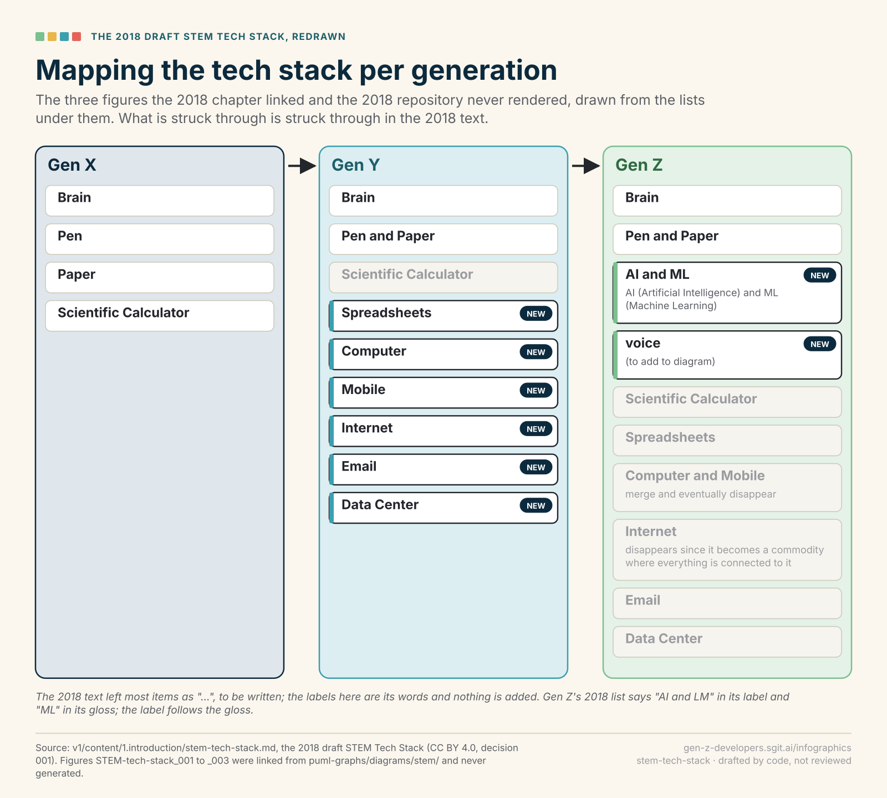

Every infographic proposed for the book: 81 of them, 10 drawn already as prototypes. Read a card, look at the drawing where there is one, and give your verdict: accept, change (say what), decline (say why) or later. Your verdicts stay in this browser until you export them; nothing is sent anywhere.
Each square is a chapter of v2.0.0-rc2, shaded by how many infographics are proposed for it; click one, or a part, to see only those. A part with its own view says so.
bookmapcodepriority 1drafted
For the whole book · the-book-on-one-page

What it shows. Every chapter of the release candidate as a tile in a column per part, as tall as the chapter is long, coloured by how the five synthetic readers held there, with a mark where a reader put the book down.
Why. Readers navigate this book by jumping from the contents page; this is the contents page as a picture, and the editor's view of where the book is slow, at the altitude the brief asked for first: the whole book on one page.
What is on it (5)
- ten parts, 41 chapters: from v2/content/
- tile height: the chapter's length in words
- tile colour: mean interest of the synthetic readers, 1 to 5
- marks: where readers put the book down
- dashed: a placeholder chapter
Sources: Five readers who do not exist · Ideas: none
Notes. Computed, not authored: it redraws on every build from the candidate and the study, so it is never out of date. For print, a version coloured by part rather than by the study (the study is the editor's tool, not the reader's).
What it shows. For each of the ten parts, its chapters as a strip: number, title, the one thing each leaves the reader with, and the badges (compass, house, grid); the opener of the part, drawn from the candidate's data like the book on one page.
Why. The second altitude the brief asked for, a view per part; three parts have a hand-made proposal (before you start, start the company, hands on), and a computed strip gives the other seven one today and keeps all ten honest as chapters move.
What is on it (3)
- the part's title and intro
- its chapters, in order
- per chapter: what it leaves you with; its badge
Sources: none named · Ideas: none
Notes. Needs one line per chapter, 'what it leaves you with', which the candidate does not carry yet: a front-matter field for the editor, or the hands-on chapters' own 'By the end of this chapter' lines. Not the storyboards plan's 'chapter strip' (three panels under a chapter's title): this is a contents strip for a part, drawn from data.
partmapimage-modelpriority 3proposed
For the whole book · part-openers-illustrated
What it shows. One illustrated page per part, made by an image model from a brief generated from the part's intro and the cast: the part's argument as a scene, with the book's palette.
Why. Every proposal in this plan is structure, so every one came back as code; the openers are where a picture with a mood earns its place, and where the newsroom's image-model bake-off says the models now do well.
What is on it (2)
- ten parts
- brief: the part's intro, the cast's looks, the palette, the footer line
Sources: Storyboards drawn by code, and the newsroom read in full · Ideas: none
Notes. Needs the OpenRouter key in the private vault, which Dinis holds; the newsroom's The infographic bake-off recommends Nano Banana 2.1 for concept slides. Whether the book carries any image-model art at all is Dinis's to decide (the storyboards chose none). The storyboards agent proposes the same page as four to six panels from the part's storyboard (agent article 07, a plan for putting storyboards in the book); this is the alternative, and this agent recommends the panels. Dinis picks one, or neither.
What it shows. The five chapters of part 1 as five stations on one line, each with its single question and its one-line answer, ending at an arrow 'go where your map says' pointing to the three badges (compass, house, grid) and the part Start the company.
Why. Part 1 is 8,751 words before anything practical; a reader who sees the whole part at once can decide what to read closely and what to skim, instead of putting the book down.
What is on it (6)
- 1. Gen ZX: who this book is for and what it is for: two generations; by the end you have started a company
- 2. You are lucky to be here: nobody knows what is going to happen; the pieces are still landing
- 3. Everything is connected: one chapter on graphs because everything after it is one; start anywhere
- 4. Where do you land?: which kind of developer you are: explorer, villager, town planner
- 5. Connect the dots backwards: why the path only makes sense afterwards; make dots worth connecting
- Then go where your map says: the chapters for everyone, then the ones with your badge
Read these first; then go where your map says. ✓ in the chapter
Sources: none named · Ideas: none
Notes. The one-line answers are taken from each chapter's own text (see the chapter proposals); the 8,751-word figure is from the reader study, not the book, and should not appear on the drawing.
What it shows. The part as one left-to-right path: know the problem and build the first answer, ship it and see if they miss it, price it and give it away, sell, decide whether to raise at all, make the company itself real. Each step carries its chapter title and the one test it asks.
Why. Readers jump from the contents page straight to Start the company; this gives them the part's shape and where to begin before they open a chapter.
What is on it (7)
- Be a founder: the expert founders: Execution just got cheap, so the person who knows the problem can build the first answer
- Ship it, and see if they miss it: Ship it. Give it away. Take it away. Ask.
- Price it, then give it away: Price it first, because the price is the claim
- Sell: answer a question somebody already has, with a deadline
- Fund it, or do not: decide whether to raise at all; investors should be calling you
- The company itself: the UK, Portugal, Lithuania, the European Union (placeholder)
- Footer: From experience, mine and the people I work with; not legal or tax advice.
Execution just got cheap, so the person who knows the problem can build the first answer ✓ in the chapter
Sources: none named · Ideas: none
Notes. Labels come from the part's _index.md and the chapter titles; the step glosses are lines from chapters 18, 19, 20 and 21. The last step must be visibly marked as not yet written. Quote is from v2/content/6-start-the-company/_index.md.
What it shows. The part's eleven chapters as tiles, each with the output its opening sentence promises, grouped as the part runs from an agentic workflow to a serverless product, with the year on the frame.
Why. Readers found the hands-on part slow and repetitive; a part-level map lets a reader pick the one workflow they need instead of reading all eleven.
What is on it (11)
- An agentic workflow from zero: a folder for every person, an agent that drafts, six lines of rules
- Your first graph: a text file of forty-odd lines
- One idea, five lenses: one idea explained five ways
- A tiny agent loop: a loop run by hand
- Storyboards drawn by code: a storyboard that is data
- Meeting briefs and follow-ups: three habits around every meeting
- Your own newsroom and inbox: a site from voice memos; an inbox that drafts and never sends
- Form your company: not written yet
- The credits and programmes, 2026: a short list and an application for each
- Your first price and first ten customers: a price, an offer, a stop rule, a file of counts
- Ship a serverless product in a weekend: the smallest product a stranger can pay for
The practical part, dated 2026 and renewed every year, inside the book. ✓ in the chapter
Sources: none named · Ideas: none
Notes. Tile glosses are condensed from each chapter's first paragraph; the part index sentence is the only quote. Form your company stays marked as waiting on Dinis.
ideagraphcodepriority 3proposed
For the whole book · the-register-by-topic
What it shows. One small graph per topic of the register: its ideas as nodes, the chapters they go to, the sources behind them; the fourth altitude, the graph of each area.
Why. The brief asked for an infographic at every altitude, the graph of each area among them; the graph pages already hold the data, and this draws it a topic at a time for the book's back matter or the site.
What is on it (2)
- 18 topics
- per topic: ideas, chapters, sources, and their states
Sources: The book as a graph · Ideas: the-book-as-a-graph
Notes. The drawn graph at graph/view.html is the whole thing at once; this is the same data cut by topic. A layout is needed (the grid form places nodes by hand).
What it shows. One left-to-right pipeline from Dinis's voice memo to a frozen candidate and back again: memo, article, idea, chapter map, chapter, frozen snapshot, review, Dinis's verdict, next candidate. The one rule sits above the line; the seven verbs sit at the end.
Why. The front matter explains an unfamiliar method in 700 words of prose; a reader who jumps here from the contents page gets the whole method, and why every claim is sourced, in one look.
What is on it (12)
- Voice memos: the book is talked into existence
- Articles in his voice: written up with a journalist agent, each ending with a brief for the roles
- Ideas: a librarian writes one idea per thing the book would say, with where it came from, down to the section
- Chapter map: the ideas are placed on a chapter map
- Chapters: each written from the ideas placed in it, by an agent that reads the articles and the 2018 text behind them and nothing else
- Notes to Dinis: where the sources run out, the chapter says so
- Frozen snapshot: a candidate, not a version; what Dinis reads cannot change behind him
- Review board: an advocate and a cutter and the readers and a checker and the editor
- Dinis decides: keep, rewrite, merge, cut, article first, later, not doing it
- Next candidate: his feedback produces the next candidate rather than an edit of this one
- Release candidate 1: thirty chapters: side note
- Release candidate 2: forty-one chapters in ten parts: side note
The rule is simple: every number, every quotation and every story has to be in a source the chapter names. ✓ in the chapter
Sources: The book as a graph, Decision 008: The book is made in release mode, through a review board, Decision 009: A release candidate is read on the site from a frozen snapshot, ma, Read, comment, decide · Ideas: none
Notes. The storyboard 11__the-book-in-release-mode may cover part of this; check for overlap. Counts (30, 41, ten parts) must be updated if rc3 changes them.
A newsroom figure already draws this. 1 newsroom figure in the articles it draws on
Reuse it, redraw it in the book's palette, or leave it to the article. The images stay on newsroom.sgit.ai.

What it shows. The three figures the 2018 draft linked and never generated (STEM-tech-stack_001 to _003), drawn from the lists under them: Gen X, Gen Y and Gen Z, with what is new and what is struck through.
Why. The reviewer's open issue 003 asks whether to render the missing figures or redraw them as infographics; this is the redraw, from the 2018 text alone, ready for that decision. Chapter 8's tech-stack-per-generation proposal builds on it.
What is on it (3)
- Gen X: Brain, Pen, Paper, Scientific Calculator
- Gen Y: adds Spreadsheets, Computer, Mobile, Internet, Email, Data Center; strikes the calculator
- Gen Z: adds AI and ML, and voice; strikes the rest
Sources: STEM Tech Stack · Ideas: none
Notes. The 2018 text has 'AI and LM' in its label and 'ML' in its gloss; the drawing follows the gloss and says so. v1/ is frozen: the figure goes to the vault's working copy, or into chapter 8 through tech-stack-per-generation, never into v1/.
What it shows. A route map of the book with the objective at the destination: the frame, then Start the company at the centre (its five stops), then Build it without a server, then the dated hands-on part, ending at the measure: companies created.
Why. Readers navigate by jumping from the contents page; this tells a founder where the practical parts are and why the earlier chapters come first.
What is on it (8)
- Objective: by the end of the book you have started a company
- Start the company (the centre of the book): be a founder; ship it and see if they miss it; price it and then give it away; sell; fund it or do not; the company itself
- The company, for real: a limited company in the UK, the case for Lithuania, Portugal, the European Union and what exists there for a founder
- Build it without a server: no servers of yours with logic in them, no database of yours, the work done on the user's side; SG/Send and sgit; RiskMandate
- Hands-on part, dated: cloud providers and startup programmes, renewed each year; ends with a product shipped that way in a weekend
- The first sale
- The measure: how many companies have been created from it
- Caveat: written from experience; not legal or tax advice
Our job is to empower the reader to create a startup by the end of the book. ✓ in the chapter
Sources: Gen ZX Developers, Decision 015: The Gen ZX proposal is the frame of release candidate 2, Decision 014: The title is Generation ZX Developers (GenAI Startup Edition) · Ideas: the-reader-is-the-founder
Notes. Storyboard 12__gen-zx-developers has 'From a problem to a company' and 'Start the company, for real'; this is a navigational map of the book, not a scene. Part names must match the final contents of rc2/rc3.
What it shows. Two columns, Generation Z and Generation X, joined at the bottom into Gen ZX, with the expert-founder numbers as a strip of key figures beneath the Gen X column.
Why. The chapter's two readers and the evidence for the older one are scattered across prose; side by side, each reader finds themselves in one glance.
What is on it (9)
- Generation Z: born 1997 to 2012; the first reader; entering the workforce; the new entrepreneurs; grew up with the agents
- Generation X: born 1965 to 1980; the second reader; the subject-matter experts, twenty years inside a problem; grew up with the problem
- Millennials, 1981 to 1996: in the middle; a different story
- Often the same family: Generation Z are, by the dates, the children of Generation X
- 45: mean age at founding of the fastest-growing one in a thousand new companies (2.7 million US founders)
- 2x: founders with three or more years in the same industry reached that top tier at twice the rate
- A third: of new US startups now have a single founder
- Gen ZX: goes back to the ZX Spectrum, April 1982
- Dates: Pew Research Center: boundaries differ between sources
Execution just got cheap. ✓ in the chapter
one grew up with the agents, the other grew up with the problem. ✓ in the chapter
Sources: The expert founders, Gen ZX Developers, Gen ZX Developers · Ideas: two-generations-gen-zx, the-reader-is-the-founder
Notes. The storyboard has a Pew-dates spectrum; this adds the founder numbers, which come from news:the-expert-founders (check the underlying study before printing).
3 newsroom figures in the articles it draws on
Reuse it, redraw it in the book's palette, or leave it to the article. The images stay on newsroom.sgit.ai.
What it shows. The chapter's argument as six steps, each a heading and one sentence: from wonder, past the fear, through the transformations, to technology that works for you and how to read the book.
Why. Chapter 2 is marked too slow by all five readers; this gives its argument in one look so the reader can choose which section to read in full.
What is on it (6)
- Wonder: I discover things I can do
- The fear is what you hear: AI took the jobs before you got there; it is too late for you
- Nobody knows: my position, not a forecast
- We have been here before: seven transformations; each time the paths evolved
- Technology that finally works for you: one of you was handed technology to use; the other put the building down; now you can both build again
- Read it on paper, with a pen: find your centre of gravity first
ignore the doom, because nobody knows what is going to happen. ✓ in the chapter
Sources: You are lucky to be here, Two years in, the opposite · Ideas: wonder-not-fear, lucky-to-be-here, nobody-knows, technology-finally-works-for-you, read-it-on-paper
1 newsroom figure in the articles it draws on
Reuse it, redraw it in the book's palette, or leave it to the article. The images stay on newsroom.sgit.ai.
What it shows. A dated timeline from the early 1980s to November 2022 with the seven transformations and what each changed, and one marked dip: the dot-com crash, Nasdaq peak March 2000 to October 2002, with the internet carrying on above it.
Why. The chapter's evidence that 'this time is different' has been said before is a list in the middle of a slow chapter; a timeline makes the pattern visible instantly.
What is on it (8)
- Home computer, early 1980s: a computer became something you could own, open and program
- BBS, 1980s and early 1990s: text messages and chat between strangers, over a phone line
- Internet, 1990s: everything published, linked and searchable
- Mobile phone, late 1990s; smartphone, 2007: the network in your pocket
- Cloud, mid 2000s: servers you rent by the hour instead of buy
- Apps, 2008: software delivered to everyone, instantly
- Generative AI, November 2022: software you can talk to, and that can build software
- Dot-com crash: Nasdaq peaked in March 2000; lost roughly four fifths of its value by October 2002
A crash would change who makes money; it would not undo what people can now do. ✓ in the chapter
Sources: You are lucky to be here, The opening: you are lucky to be here · Ideas: seven-transformations, nobody-knows
Notes. The storyboard 03__the-opening has a spectrum of the transformations without dates or the crash; this is the dated version. Whether the dot-com crash stays in this chapter is an open question to Dinis in the text.
What it shows. Four rungs, each drawn with the same few nodes: a whodunit board (things and string), a graph (nodes and edges), a map (the same graph with positions), graphs of graphs (a node opened to show a graph inside it). The bottom line: start anywhere.
Why. The non-coder gets lost in technical passages; this shows the chapter's one idea building up in four steps with the same nodes, before any code appears.
What is on it (5)
- The whodunit board: everything on that board is either a thing or a connection between two things; what connects A to B?
- A graph: a network: nodes, and the edges that connect them; never a chart, never a figure
- A map: a graph with positions: same nodes, same edges, every node a place on the page that means something
- Graphs of graphs: zoom into a node and you find another graph inside it; a law, its articles, the terms they use
- Start anywhere: a graph has no front page; pick a node and follow one edge
A node connected to nothing is literally meaningless. ✓ in the chapter
It does not matter where you start; it matters that you start. ✓ in the chapter
Sources: Everything is connected, The graphs books, Fractal Semantic Graphs, Everything is connected · Ideas: a-graph-is-not-a-diagram, the-whodunit-board, a-map-is-a-graph-with-positions, graphs-of-graphs, start-anywhere
Notes. The storyboard draws these as separate panels; this is the single summary picture. Keep the same nodes on every rung so the progression is visible.
What it shows. Six layers from a person at the top down to the syntax tree, with one change highlighted at the methods layer and its blast radius climbing up to the stories it reaches; a numbers strip shows the sgit example.
Why. The section is the chapter's most technical and the founder needs it most; a stack lets a non-coder read 'read what the agents made at the altitude you need' without reading code.
What is on it (11)
- A person trying to do something: the stories at the top
- Features and flows
- Components: what people draw when you ask for the architecture
- Classes
- Methods and the calls between them
- Syntax tree: an abstract syntax tree: a graph representation of source code
- A refactor: moves the bottom layers, leaves the stories at the top still
- A bug: a story that stopped holding
- Blast radius: the climb from the methods it touched up to the stories that can reach them
- 75 lines added, 7 removed, 3 files: one commit to the sgit command line
- 9 of 72 commands, 6 of 11 user stories: what that commit reached, read with nothing run
A refactor is a change that moves the bottom layers and leaves the stories at the top still. ✓ in the chapter
Sources: Code review as a fractal semantic graph, AST (Abstract Syntax Tree) · Ideas: code-is-already-a-graph, graphs-of-graphs
Notes. Numbers are from news:code-review-as-a-fractal-semantic-graph; check against the published vault before print.
![Three columns. The explorer is bursting with ideas, sees failure as just an experiment, makes a prototype for early adopters, and reads explorer coding and building fast with agents first. The villager loves the user, does not like failure that much, packages and releases, and reads shipping, selling and your own newsroom first. The town planner geeks out on the details, likes to be invisible, makes something a commodity, and reads controlling your agent, the record, serverless for real and reading code as a graph first.](../infographics/svg/three-centres-of-gravity.svg)
What it shows. Three columns, each headed with its badge (compass, house, grid): what they love, how they see failure, what they make, and which chapters to read first; across the top, the movement from genesis to commodity; across the bottom, the test for your centre of gravity.
Why. This is the chapter the rest of the book is navigated by; a reader who can find their column at a glance knows which badged chapters to jump to from the contents.
What is on it (7)
- Explorer (compass): bursting with ideas; failure is just an experiment; wants to invent the bricks; makes prototypes for early adopters; read early: explorer coding, building fast with agents
- Villager (house): loves the user; does not like failure that much; packaging, releasing, going to market; the second version has to be designed; read early: shipping, selling, your own newsroom
- Town planner (grid): geeks out on the details; boring is good; likes to be invisible; makes something a commodity; owns the code in production; read early: controlling your agent, the record, serverless for real, reading code as a graph
- Wardley's names: pioneers, settlers, town planners (2015); explorers, villagers, town planners (since 2023)
- The test: What do you care about? What makes you lose your sense of time?
- It moves: as your career changes, your centre can move with it
- Founder: needs both halves: the exploring and the handover
All three are brilliant. ✓ in the chapter
This is a lens, not a label. ✓ in the chapter
Sources: Where do you land? Wardley maps run through the whole book, shown before they ar, Why I love Wardley maps, Explorer coding, Are you a pionner, Settlers or Town Planners · Ideas: centre-of-gravity, three-learning-paths
Notes. The storyboard 04__where-do-you-land has one scene per persona; this is the reference table. The badges are 'a first attempt' per the text; reuse the storyboard's drawn badges. Wardley's quoted definitions are his (CC BY-SA material); attribute.
A newsroom figure already draws this. 2 newsroom figures in the articles it draws on
Reuse it, redraw it in the book's palette, or leave it to the article. The images stay on newsroom.sgit.ai.
What it shows. A grid: one horizontal arrow from genesis to commodity, and under it eight rows, each running through four stages left to right; a line separates Wardley's four published rows from Dinis's own explorations.
Why. The list is hard to read as prose; drawn as aligned rows it shows the chapter's claim that the same movement is everywhere, in one look.
What is on it (8)
- Activity: genesis, custom build, product, commodity
- Practice: novel, emerging, good, best
- Data: unmodelled, divergent, convergent, modelled
- Knowledge: concept, hypothesis, theory, accepted
- Openness of content (Dinis): confidential, published with ordinary copyright, CC BY, CC0
- Openness of software (Dinis): proprietary, GPL, open source, public domain
- Backup restore time (Dinis): infinity (no backups), a week, a day, real time
- Data, by shape (Dinis): unstructured raw text, spreadsheet, graph, map
Every dot is a claim. ✓ in the chapter
Sources: Why I love Wardley maps, Where do you land? Wardley maps run through the whole book, shown before they ar · Ideas: four-stages-beyond-activities
Notes. The first four rows are from Wardley's published material (CC BY-SA); attribute and keep the dividing line. The original talk table has more rows (incident response, security logs, risk...) that only Dinis's talk can supply.
What it shows. The chapter's lessons as dots scattered on the page, each with a short label; a single line runs backwards through them from the last to the first, so the path only appears looking back.
Why. Chapter 5 is marked too slow by all five readers; this gives its ten lessons in one look, drawn as the chapter's own metaphor.
What is on it (10)
- Connect the dots backwards: you can't connect the dots looking forward; one-way and two-way doors
- The edge is multidisciplinary: the ability to learn, and to intersect disciplines
- We teach maths as if to make people hate it: If you hated maths at school, you were probably taught it badly
- Learning, made for you: clear goals, immediate feedback, a challenge matched to your skill (Flow; Peak)
- Think with it: do not delegate your thinking to it
- Generative AI lets you explore again: experiment, learn, try, start, and adjust
- Learning is a lifelong skill: learning is like a muscle
- You are already in a very small minority: developers about 0.6% of internet users; 5% of adults reached the level of a skilled user
- The thinking is never wasted: a pivot leaves assets, if you did the work in the open
- Know where your ideas come from: keep a register; write it on paper first
Your future self will connect the dots. Your job now is to make dots worth connecting. ✓ in the chapter
Sources: Connect the dots backwards, Where the thinking came from, Not a straight line · Ideas: connect-the-dots-backwards, multidisciplinary-edge, maths-taught-to-be-hated, learning-made-for-you, think-with-it, explore-again, small-minority, the-thinking-is-never-wasted, know-where-your-ideas-come-from
Notes. The 0.6% and 5% figures are the newsroom's arithmetic on others' surveys, 'for sizing, not for adding up'; label them so or leave them off.
1 newsroom figure in the articles it draws on
Reuse it, redraw it in the book's palette, or leave it to the article. The images stay on newsroom.sgit.ai.
What it shows. Two paths from the same question: on one, ask for the answer and paste it in, ending at 'learned nothing'; on the other, ask why, where it came from, what would show it was wrong, ending at 'learning'. Under both, a third short path: use generative AI to write the tool that does the job with no model in the loop.
Why. It is the most practical idea in part 1 and is buried mid-chapter; the non-coder can act on it the same day.
What is on it (6)
- Search gave you an answer: without the ability to question it
- Delegating: ask it for the answer and paste it in: you have learned nothing and put your name on something you cannot defend
- Thinking with it: ask it why, then where that came from, then what would show it was wrong: you are learning
- It is still your name: if the company is yours, so is everything the agents build in it
- Example: the agent double-checks quotes and finds the evidence; it corrected the author's name of A Mathematician's Lament
- Use generative AI so that you do not have to use generative AI: write the script or the tool that then does the job reliably, with no model in the loop
This is not you delegating your thinking to generative AI; it is you thinking with it. ✓ in the chapter
Sources: Connect the dots backwards · Ideas: think-with-it
What it shows. A blank card, to be filled on paper, with three rows (three people or works) and four columns; one row filled in as an example from the chapter (Csikszentmihalyi's Flow, the zone).
Why. Part 1 has nothing practical for 8,751 words; this is the one exercise in it, and a card makes it something the reader does, not reads.
What is on it (6)
- Pick the three people or works that have shaped how you think
- The one work that did it
- The principle you took from it: in one sentence anyone could use
- Where that principle shows up: in something you have made
- Where it does not yet
- Write it on paper first: you will forget the ideas you are having today
An entry in this register is a falsifiable claim about my codebase. ✓ in the chapter
Sources: Where the thinking came from, Pen and Paper · Ideas: know-where-your-ideas-come-from
Notes. A filled example row needs Dinis's register entry for Flow (or another work) word for word; do not invent the principle sentence.
What it shows. Input, then a black box labelled GenAI holding an intermediate representation, then output; the prompt drawn as the thing that narrows the model's rich picture; after the output, human verification and human ownership. A fork on the output shows hallucination as a feature (stories) and a bug (facts).
Why. The non-coder gets lost in technical passages; this is the chapter's own slide picture, so the mechanism is seen before it is explained.
What is on it (8)
- Input: the data, or your prompt
- Intermediate Representation: the model builds its own interpretation of it
- Output: an image or a text, generated from that representation
- Predicts the next word: accurate and demeaning at the same time
- The better your prompt, the better the output: the prompt pulls it towards the part of what it knows that I mean
- Human verification and human ownership: what matters is not the black box
- Hallucination: a feature: when creating content and when we want creativity
- Hallucination: a bug: when we want facts, evident and trust
There is an abstraction layer between what goes in and what comes out ✓ in the chapter
Sources: Generative AI, not AI · Ideas: generative-ai-not-ai, better-prompt-richer-picture
Notes. Redraw, do not copy, the Lisbon 2024 slide (Dinis's own; fine to reuse if he agrees). Lee Brimelow's Starry Night image is not usable without permission (the chapter's own note). 'evident' is the slide's wording; keep it if quoted, or use 'facts' only.
What it shows. Two columns: on the left Dinis's working picture in his words; on the right the agent's correction for each, with the open questions marked as open.
Why. The corrections are a dense list the non-coder will skim past; paired with the intuition they correct, each one reads in a second and models the habit of asking to be corrected.
What is on it (8)
- The older AI was steps or a formula: correction: machine learning in general learns from data; generative AI is one branch of it; it produces new content
- A graph inside the model: correction: vectors, not a graph; attention connects every word to every other word; my graph is a metaphor
- Real-time fine-tuning: correction: the prompt does not change the model; the weights stay the same
- It predicts the next word: correction: the next token, then it is trained to be useful, including on human feedback
- Hallucinations come from connections: correction: a second cause; training and evaluation reward guessing over saying I don't know
- Image models learned the structure of images: correction: most are diffusion models; statistical patterns; they still get light, shadows and hands wrong
- Emergent abilities: debated (Wei 2022; Schaeffer 2023)
- A world model: an open question
Keep both halves. ✓ in the chapter
You will need the first to be fast and the second to be honest ✓ in the chapter
Sources: Generative AI, not AI · Ideas: generative-ai-not-ai
Notes. The AI bucket (AI, machine learning, deep learning, generative AI) is already a spectrum in storyboard 07, so it is not proposed again.
What it shows. One agent drawn as nested parts: at the centre the same raw model; around it the lens (the prompt), then the role (a role description and a question), then the loop (tools, a rule for stopping), with the harness around everything as the place the control lives.
Why. The chapter promises 'it is not magic'; one labelled anatomy gives the non-coder the whole workflow from a single prompt to an agent that runs for hours before the detail.
What is on it (7)
- The model: the same model sits behind every role
- A prompt is a lens: it puts the right lens in front of the idea: a teenager, a musician, a doctor, a football fan, Portuguese
- A role is a model with a description: who you are, what you care about, what you refuse, how you work (role.md), and a question
- An agent is a loop with a goal: do this; then, are we done yet, or do we need to continue?
- Tools: the model writes a structured request: a tool name and its arguments
- A rule for stopping: the model's own judgement, a test that passes, a budget that runs out, or a person
- The harness: decides whether to run it, runs it, and adds the result to the conversation
Not magic: a lens, a role, a loop. ✓ in the chapter
the model never runs a tool. ✓ in the chapter
Sources: Lenses, roles and loops, How I work with Claude · Ideas: a-prompt-is-a-lens, a-role-is-a-model-with-a-description, tools-changed-everything
Notes. The storyboard 10 already has the five lenses, the role graph and the one-tool-call loop as separate panels; this is the single anatomy that holds them together, not a repeat of the weather example.
What it shows. A tall bar for one long session's context and a thin sliver for what a summary keeps, with the measured numbers; beside it, a file icon labelled 'printed back after every summary'.
Why. The chapter's practical advice (many focused threads, rules in files) rests on one number; showing the 1.7% makes the advice obvious to a reader who skims.
What is on it (7)
- Every request is independent: the application around it keeps the conversation and resends it
- 18: times the sgit.ai site's session was summarised in a month, all automatically
- about 780,000 to 800,000 tokens: the context each summary started from
- 9,000 to 19,000 tokens: what it kept
- 1.7%: on average, of what it replaced
- Rules in a file: printed back after every summary
- One topic per session: when the topic changes, open a new session
Nothing is remembered by the model between sessions. Everything is remembered by the files. ✓ in the chapter
The rules are restored, not remembered. ✓ in the chapter
Sources: Memory is not a spectator sport, Re-anchoring · Ideas: the-model-remembers-nothing, long-chats-are-compressed
Notes. One session's measurement on one site over one month (the text says so); carry that caveat on the drawing. Storyboard 10 has an evidence card on compression; this is the numbers picture.
What it shows. Three stacked toolkits side by side, the generation before Dinis's, his, and yours, finishing the 2018 drawing he never finished: the new top layer is not programmed but briefed, in your own words.
Why. It finishes the 2018 draft's own picture and carries the chapter's turn (from 'learn to code' to 'brief it') for the non-coder in one image.
What is on it (6)
- The generation before mine: a brain, a pen, paper and a scientific calculator
- Mine: spreadsheets, a computer, a mobile, the internet, email and a data centre
- Yours (2018 note): "AI and ML" and "voice"
- Yours (2026): you brief it, and the brief is in your own words
- Portuguese is a programming language: 236 million first-language speakers
- Anyone who can brief an agent to build something is a developer: the graduate, the manager who has never coded, the expert of twenty-five years
It turns out you brief it, and the brief is in your own words. ✓ in the chapter
Sources: STEM Tech Stack, GenAI in Portuguese, 2024, The citizen developer is good news · Ideas: craftspeople-make-their-own-tools, everyone-is-a-developer
Notes. If the 2018 draft has an original sketch in v1/images, it can be shown beside the new drawing (do not edit it). A possible second picture, the spreadsheet errors (49 of 54; 15,841 cases; 65,536 rows), was left out as weaker.
1 newsroom figure in the articles it draws on
Reuse it, redraw it in the book's palette, or leave it to the article. The images stay on newsroom.sgit.ai.
What it shows. Three stations on the evolution axis, explorer, villager, town planner, with what each does to the same app; a gate between explorer and villager marked 'not ready to be in line', and a gate before production marked with the bonus test. Under the axis: the further towards commodity, the fewer agents in line.
Why. The chapter's two halves are the founder's way of building; one flow shows where the prototype stops and what has to happen before a customer depends on it.
What is on it (8)
- Explorer coding: not vibe coding; a way to find out; produces a brief that runs
- Not ready to be in line: nobody has read the code; nobody has validated the architecture
- Villagers make it reliable: tests, data handling, releases that do not break it, behaviour policies for the agents
- Town planners run it at scale and own it in production
- The bonus test: would your team accept a bonus tied to how this tool performs in production?
- Make the agents leave a record: a written mandate, memory in a versioned store, what they built described as a graph
- The further towards commodity: the fewer agents in line, and the more deterministic the code
- In a company of one, that team is you
The explorer builds the brief. The villager keeps it alive. ✓ in the chapter
Sources: Explorer coding, Who will fix your mess? An answer to HBR's "deployment gap" from what this site , Go slow to go fast · Ideas: explorer-coding, the-handover, not-ready-to-be-in-line, the-bonus-test-is-accountability, the-agents-leave-a-record
Notes. Reuse the three badges (compass, house, grid) from Where do you land? so the two chapters read as one frame.
A newsroom figure already draws this. 11 newsroom figures in the articles it draws on
Reuse it, redraw it in the book's palette, or leave it to the article. The images stay on newsroom.sgit.ai.
What it shows. Six phases as steps, with 'no behaviour change' shaded over the first four and the explorer returning only at the last; the starting numbers at the foot; the rule at the top.
Why. It turns the chapter's real case into a sequence a founder can copy for their own first handover.
What is on it (8)
- 1. Map everything
- 2. Move the code to its own repository: a pure refactoring, the same behaviour and the same bugs, proved by hashing every file before and after
- 3. Write tests: every known bug recorded as a test that passes
- 4. Review
- 5. Refactor
- 6. The explorer returns
- About 2,700 lines, 433 tests: the live reader code, measured on 11 October 2026; the one workflow never ran the tests
- No new features while you move: a migration is a pure villager move
Move first, with the code unmodified. Then add the features. ✓ in the chapter
Sources: Go slow to go fast, Move the cloud, not the code · Ideas: no-new-features-during-the-move
Notes. The text says 'no behaviour change until the fifth' phase; the shading must stop before phase 5 (refactor), so check with the source article whether refactor counts as a behaviour change.
2 newsroom figures in the articles it draws on
Reuse it, redraw it in the book's palette, or leave it to the article. The images stay on newsroom.sgit.ai.
What it shows. Two candidates who match the job specification equally well, side by side: one sends a CV, the other sends a fitted CV, a short analysis of the company's problem and something they have not seen. Underneath, where each interview starts: from the gaps in a CV, or from the candidate's strengths.
Why. It turns the chapter's central claim, why should I hire you, into a picture a job seeker (or a founder making a first sale) can copy for the next application.
What is on it (9)
- The question: why should I hire you?
- Candidate A: sends a CV
- Interview starts from: the gaps in a CV
- Candidate B: a CV fitted to the role
- +: a short analysis of the company's problem
- +: an infographic or a small working site they have not seen before
- Interview starts from: the candidate's strengths
- Same move, customer side: a founder's first sale: two suppliers look roughly equal
- Three things: Pick one workflow and do it end to end. Publish it. Use it in your next application.
An edge is not a job. It helps when the choice is close, and the choice is nearly always close. ✓ in the chapter
Sources: Hired for the workflow · Ideas: hired-for-the-workflow, it-starts-with-the-application
A newsroom figure already draws this. 2 newsroom figures in the articles it draws on
Reuse it, redraw it in the book's palette, or leave it to the article. The images stay on newsroom.sgit.ai.
What it shows. A timeline of skills that once got people hired on what they could show (using a computer in the 1990s, the internet in the 2000s, breaking applications, code review, threat modelling, websites, email campaigns, mobile apps after the App Store in July 2008, Salesforce, spreadsheets) ending at now: running agentic workflows. A band beneath shows the shape each one followed: rare, hired on what you show, then expected of everyone.
Why. It makes the chapter's argument visible at a glance: the non-coder sees that every skill they already have was once this new technique, so they are more technical than they think.
What is on it (8)
- 1990s: you could use a computer
- 2000s: using the internet
- security and software: break an application; do a code review; threat modelling; program decently
- the web: building a website; sending email campaigns
- July 2008: App Store opens, more than 800 apps in its first weekend; people who could build a mobile app got jobs
- the business tools: Salesforce inside out; making a spreadsheet do things others could not
- 2026: running agentic workflows: brief an agent, give it a boundary, check what comes back, glue the pieces together
- The shape: a skill is rare; it gets people hired on what they can show; then everyone is expected to have it
Each of those skills later became normal. ✓ in the chapter
Sources: Hired for the workflow, How to get a job · Ideas: hired-for-the-workflow, you-are-more-technical-than-you-think
Notes. Only the 1990s, 2000s and July 2008 entries carry dates in the text; the other rows should be drawn as undated bands, not placed on invented years.
A newsroom figure already draws this. 2 newsroom figures in the articles it draws on
Reuse it, redraw it in the book's palette, or leave it to the article. The images stay on newsroom.sgit.ai.
What it shows. On the left, the closed loop: the role wants two years of the thing, the only place to get two years is the role. On the right, the way out: act in the role, do it in public, the work can be linked, people who want to help forward the link, and four outcomes branch off it: a reference, an introduction, pay, a hire.
Why. It gives the stuck job seeker (and the parent with twenty years in a field) the chapter's whole method on one page, with linkable work as the hinge.
What is on it (8)
- The loop: the role wants two years of the thing, and the only place to get two years of the thing is the role
- Act in the role: manage something for them: a release, a backlog, an event, a migration
- Do it in public: a pull request, a post that tags the company, an article on your own site, a project board anyone can open
- Something you can link: a page that explains who you are and what you have done
- People who want to help: forward a link: "Have a look at what this person did for this startup."
- Outcomes: a reference; introductions to people who are hiring; pay; a hire
- Caution: Choose projects where the work is yours to show, and stop if it is only taken.
- By job: artist: publish what you make; security engineer: find and report vulnerabilities in open source; product manager: write the product brief and send it
Finished and private is invisible. ✓ in the chapter
The work gives you the CV you did not have. ✓ in the chapter
Sources: Act as the job you want, How to get a job · Ideas: act-as-the-job-you-want, your-cv-online
Notes. Reach figures (a hundred views, sometimes five hundred) could be a side note but are Dinis's own LinkedIn numbers and dated to 2026.
A newsroom figure already draws this. 1 newsroom figure in the articles it draws on
Reuse it, redraw it in the book's palette, or leave it to the article. The images stay on newsroom.sgit.ai.
What it shows. What you need (three items) above five numbered steps from creating the repository to keeping the record, with the loop drawn under them: you speak a memo, the agent researches, writes, checks, builds, publishes, you read and correct by voice.
Why. It is the copyable recipe the chapter gives founders and job seekers; a reader should be able to set it up from the poster alone.
What is on it (9)
- You need: a GitHub account and one public repository (Pages is free; nothing confidential goes in it)
- You need: an agent plan with cloud sessions connected to that repository
- You need: any app that turns a voice memo into text
- 1. Create the repository and turn on Pages: a workflow that validates before it publishes; a failed check stops the release
- 2. Write the house rules: one file at the root the agent reads every session; grows by one line every time you correct the agent
- 3. Connect a cloud session and give it the first brief: folders, an article template, a small build script, a validator, a first page about you
- 4. Record, paste, review: correct by voice; the agent rebuilds, validates, pushes, checks the live page
- 5. Keep the record: a correction is a new version; every release gets a version and a one-line note
- What it is like to run: in three days, 54 messages, ten of them voice memos, became 40 releases
And a rule in a prompt is a hope: only the rules a hook or the build keeps are enforced, so mark which is which. ✓ in the chapter
Sources: Your own newsroom, Twenty sites in fifteen days, and what that did to the writing, Hugo · Ideas: publish-publish-publish, your-newsroom-is-your-demo-and-your-crm
Notes. The 54 messages / 40 releases figure is dated October 2026 and from the newsroom. The free-plan Pages condition (public repository) is GitHub's current rule; recheck before printing.
2 newsroom figures in the articles it draws on
Reuse it, redraw it in the book's palette, or leave it to the article. The images stay on newsroom.sgit.ai.
What it shows. Four inputs feeding one session (the corpus, the memo, the rules, the reader), each with its number or example, and a note that taking any one away stops it working; a small inset shows how to start each one this week.
Why. It answers the reader's 'how does it sound like you?' and shows that the method transfers while the voice does not.
What is on it (6)
- The corpus: everything already published: 86 articles, about 347,000 words, 51 of them from voice memos
- The memo: me talking, in the order I thought it
- The rules: seven, each a correction made once: no em-dashes; no absolutes I cannot back; "great", not "perfect"; British English; plainer words
- The reader: I read every article, before it goes live and after; a wrong word becomes a rule, a wrong point a new version
- Nothing is trained: the same model anyone uses; one session's context
- Start today: the corpus at one article; the rules file at one line
The model never decides whether something sounds like me. I do. ✓ in the chapter
the person has to do most of the work, by thinking out loud, by reading, and by saying no. ✓ in the chapter
Sources: How the voice works, How much of this did I write? The numbers behind twenty articles in four weeks, · Ideas: the-voice-is-four-inputs, the-memo-is-the-thinking
Notes. Only five of the seven rules are named in the text; draw five and mark 'and two more' rather than inventing them. Corpus counts are the newsroom's at the time of the article.
What it shows. A spreadsheet row on the left turning into a Contacts folder on the right: one folder per person, five documents inside, with the Summary drawn as derived from the other four and each document marked with what the agent may do to it (add, write, show me first, regenerate).
Why. The non-coder's first workspace, drawn so it can be built in Google Drive from the picture alone, with the rule that the Summary is a view and the Record is the truth.
What is on it (9)
- Spreadsheet row: a summary you typed: a stage, a date, a next step, a notes column
- Contacts / one folder per person
- Record: role, company, how you met, stage, next step and date, what they care about; every fact with its source, "(email, 3 Oct)"; agent shows you any change first
- Ledger: one line per event: date, in or out, channel, one sentence; only ever added to
- Messages: every email and note, pasted word for word
- Notes: calls and meetings, dated, including what you said into your phone afterwards
- Summary: written by the agent from the four above; never edited by hand
- The fix: if the Summary is wrong, fix the Record or the Ledger and regenerate
- Week one: Ask, Prepare, Draft, Debrief, Campaign
The Summary is a view; the Record is the truth. ✓ in the chapter
Sources: From a spreadsheet to a folder per person, Replicating the agentic inbox · Ideas: first-workspace
Notes. Uses Google Drive, Gmail and the Claude app by name, as the chapter does; the accounts-and-costs checklist is a gap the chapter flags for Dinis, so do not add prices.
What it shows. The six-line policy as a card to paste into a Project's instructions, with the three lines learned the hard way highlighted (draft and never send; append and never rewrite; stay in the folder) and a tag on each saying whether it is enforced or told.
Why. A founder setting up a first agent can copy it exactly, and see which lines the app actually holds and which only the one-line report checks.
What is on it (7)
- 1: You work for me. Every email you write is a draft that I read and send. You never send. (holds as far as Gmail drafting goes)
- 2: You write only into a person's folder: Ledger, Messages, Notes and Summary; never change the Record without showing me first
- 3: You add to the Ledger and the Messages. You never rewrite or delete a line. A correction is a new line.
- 4: Every fact you put in a Record or a Summary names where it came from.
- 5: If a person has no folder, you ask before making one. If a request would reach outside the folder, you ask.
- 6: At the end of every task you say, in one line, what you read and what you wrote.
- Learned the hard way: draft and never send; append and never rewrite; stay in the folder
Draft, never send is the rule that never changes. ✓ in the chapter
Sources: Replicating the agentic inbox, How I work with Claude · Ideas: first-workspace
Notes. Line 2 is condensed; the full wording is in the chapter and should be used if space allows. The enforced-or-told tags follow the chapter's statement about the Claude app 'today' (October 2026) and may date.
What it shows. Three agent surfaces as columns, with what each reaches (nothing, no repositories, one repository per session) and what it is for, beside the laptop that reaches everything you can read.
Why. It makes the chapter's security argument usable: a reader can see why the agent does not run on the laptop and which surface to open for which job.
What is on it (6)
- Your laptop: a process you start runs as you: cloud credentials, the password manager while unlocked, every signed-in site
- A chat with nothing connected: for thinking
- Cowork in the cloud, with no repositories: for most of the agentic work
- Claude Code on the web, one repository per session: when code has to change
- Your Contacts Project: reaches one folder and one mailbox, and nothing else of yours
- The agent's own mailbox: empty on day one; reaches exactly what you forward to it
A mistake inside a boundary is a bad afternoon. The same mistake inside your account is an incident. ✓ in the chapter
Sources: Why my agents do not run on my laptop, Don't touch production · Ideas: not-on-your-laptop
Notes. Product names (Cowork, Claude Code on the web) are as of October 2026.
What it shows. One agent drawn as a stack: the project documents, the role.md, a named session that reads them first; around it the three shared files that make several agents work (lessons, debriefs, the daily brief), and below it the four things a good brief says.
Why. It gives the reader, coder or not, the minimal kit for an agent and the brief as its unit of work, which is what a hiring manager or a founder looks for as evidence.
What is on it (8)
- Project documents: what it is, where it is going, what has been decided
- role.md: what it may do, what it must not do, and where it writes
- A named session: reads those first; @briefs, @inbox, @librarian
- One session per topic: a thread is the model's frame of reference
- Lessons: one thing learned, the evidence, which agents it applies to, whether it still holds
- Debrief: what was done, what is open, what went wrong
- Daily brief: the Librarian: what needs me, what happened, at most three suggestions
- The brief: what is asked, what exists, what remains, what done looks like
The brief is the short letter. ✓ in the chapter
Sources: How I work with Claude, The Librarian's daily brief, Brief the agent too, Write it as an article · Ideas: an-agent-is-a-session-with-a-focus, brief-is-the-unit-of-work
Notes. The chapter asks Dinis whether the Librarian runs now; draw it as described, not as a running system, until he answers.
What it shows. The trap as a loop (a mistake adds a rule, the prompt grows, the summary comes sooner, the summary decides which rules survive, a lost rule causes a new mistake), with the way out drawn as a branch: replace the rule with a stronger barrier, keep the rest in a file restored after every summary.
Why. The reader who has started using agents meets this trap first; the picture shows why a stronger wording does not help and what does.
What is on it (8)
- A mistake: adds a rule
- The prompt grows: one friend's had grown to 100 KB
- The summary comes sooner: one session summarised eighteen times in a month, each keeping on average 1.7%
- The summary decides which rules survive
- A lost rule: when it does not survive, nothing tells you
- Way out: a stronger barrier: a step short enough to finish before the summary; a wrapper that writes every output to a file; a script committed and hashed before it runs
- Re-anchoring: the rules are restored, not remembered
- Keep few: rules from incidents, enforced by machines, stay few; rules from worry, enforced by attention, multiply
Every mistake added a rule, and every new rule caused new mistakes. ✓ in the chapter
Sources: Every mistake added a rule, Re-anchoring · Ideas: every-mistake-added-a-rule, a-correction-becomes-a-rule
Notes. Counts (100 KB, eighteen summaries, 1.7%) are from the cited articles and specific to those sessions.
4 newsroom figures in the articles it draws on
Reuse it, redraw it in the book's palette, or leave it to the article. The images stay on newsroom.sgit.ai.
![A decision tree. The question in the middle: if this is wrong, how cheap is it to undo, and what does it break before I do? To the left, the two-way door: an article, where a correction is a new version, or a narrow internal tool that can be switched off; there, use controls that do not get tired: a validator, a policy row enforced outside the model, a record read afterwards. To the right, the one-way door: an email in my name, or a tool that touches regulated data every day; there, put the person: sending in my name, typing a secret, spending money, deleting what has no backup.](../infographics/svg/how-cheap-is-it-to-undo.svg)
What it shows. A decision tree that replaces 'do I trust the agent?' with one question about each output: if this is wrong, how cheap is it to undo, and what does it break before I do? The two-way branch goes to controls that do not get tired; the one-way branch goes to a person, with the four places named.
Why. It is the chapter's most usable test, for an employee reviewing agent output and for a founder deciding build or buy; a founder can pin it above the desk.
What is on it (8)
- Not: do I trust the agent? (which has no answer)
- Ask: if this is wrong, how cheap is it to undo, and what does it break before I do?
- Two-way door: an article: a correction is a new version; a narrow internal tool that can be switched off: build it, explore, learn
- Use controls that do not get tired: a validator, a policy row enforced outside the model, a record read afterwards
- One-way door: an email in my name; a tool that touches regulated data every day
- Put the person here: sending in my name, typing a secret, spending money, deleting what has no backup
- Why not everywhere: users approve 93% of permission prompts
- 13 October 2026: fourteen releases, none approved first; twelve agents drafted every email and sent none
An article is a two-way door: a correction is a new version, and the next reader gets the fixed page. An email in my name is a one-way door. ✓ in the chapter
Sources: The human in the loop is a spectrum, The human in the loop, safety net or bottleneck, Footprint and blast radius, One way and two way doors · Ideas: one-way-two-way-doors, agents-decide-people-answer
Notes. The 93% figure is Anthropic's measurement as cited in the chapter; keep the attribution on the graphic. The Google executive's test is unsourced (open question for Dinis), so leave it off.
What it shows. A 2x2 of blocked or not blocked against changes little or changes a lot, with the whole blocked column greyed, one quadrant 'not blocked, would not change much', and the lit quadrant 'not blocked, would change a lot: work on those, and only those'. Beside it, the five ways the bigger picture is designed in for an agent, and the junior version: name the stop.
Why. It shows the skimming reader what direction means in practice, the scarce skill the chapter says people are paid for.
What is on it (6)
- Blocked on something: most things
- Not blocked, would not change much: some
- Not blocked, would change a lot: a few: work on those, and only those, until they stop being that
- Design the picture in: a brief that explains the thinking; a mandate that only reaches what the job needs; memory that holds the strategy and the threats; a stop named before the work begins; shipping often enough that users tell you
- Name the stop: a time, a budget, or a result that counts as good enough
- The measure: am I getting better?
always follow the users, even when the user is you, and follow the feedback loops. ✓ in the chapter
Sources: Places of highest leverage, Knowing when to stop, Not a straight line · Ideas: direction-is-the-scarce-skill, knowing-when-to-stop
Notes. The text gives three categories, not four; the 2x2 must leave the blocked column undivided rather than invent a 'blocked but high impact' quadrant.
1 newsroom figure in the articles it draws on
Reuse it, redraw it in the book's palette, or leave it to the article. The images stay on newsroom.sgit.ai.
What it shows. Two columns, what I remembered and what the record showed, for the founder's own company story, under a tally of eight articles' claims checked against the record (five confirmed, five corrected, two not found). The three valid answers to a review finding run along the bottom.
Why. It makes 'check' concrete for the founder who will tell an investor their story, and shows that being corrected is the method, not the failure.
What is on it (6)
- Last eight articles: 5 confirmed, 5 corrected, 2 could not be found
- Remembered: the data room and the vault came from a zip feature: Record: both named in February, before the features existed
- Remembered: a week of briefs on copying Git's model: Record: about two weeks and some 48 brief files
- Remembered: nine months: Record: eight
- Investor one-pager: 30 paying customers: Record: ten
- Every finding gets an answer: fixed, in which version; declined, with the reason; or open. Deleting the finding is not an answer.
Not found is not false. ✓ in the chapter
Count rather than remember, especially about yourself. ✓ in the chapter
Sources: My memory, checked, Reviews on the record, From sending a file to sgit · Ideas: the-record-checks-you, asked-to-be-corrected, disagree-rationally-with-provenance
Notes. The 5/5/2 tally is 'when I counted', at the time of the article.
3 newsroom figures in the articles it draws on
Reuse it, redraw it in the book's palette, or leave it to the article. The images stay on newsroom.sgit.ai.
What it shows. A one-page meeting brief laid out as the chapter's storyboard puts it on one board: who they are, what they want; what I want, what I know; what I don't know; the follow-ups.
Why. A founder's first sales calls and a job seeker's interviews are where this earns its keep; it is a template to print before every meeting.
What is on it (5)
- Who they are, what they want
- What I want, what I know
- What I don't know
- The follow-ups
- Briefings and pre-briefings: briefings for you, and briefings on the people you are meeting
These days there is no excuse not to be. ✓ in the chapter
Sources: Follow the rabbit holes, Follow the rabbit holes · Ideas: best-prepared-person-in-the-room
Notes. Labels are the ones the chapter quotes from the storyboard; check them against admin/content/storyboards for the exact board. Dinis's own step-by-step preparation is still an open question in the chapter, so the graphic should not add steps.
What it shows. A wall of key figures in two halves: the old playbook (many bets, a few pay for the rest) and the case for the expert (age 45, twice the rate with industry years, the rise of solo founders), with the opening underneath: software people pay for and do not like.
Why. The 51-year-old claims expert asks whether this is for them; the numbers say why the expert was always the better bet and why the build no longer stops them.
What is on it (10)
- about half: of just over 7,000 venture investments (1985 to 2014) returned less than the original investment
- 6% / 60%: 6% of the deals produced 60% of the total returns
- 45: mean age at founding of the fastest-growing one-in-a-thousand ventures (2.7 million US founders)
- 2x: founders with three or more years in the same industry reached top-tier growth at twice the rate
- 23.7% to 36.3%: new US startups with a solo founder, 2019 to the first half of 2025
- 11.5 months: median to a million dollars of annualised revenue, Stripe's top 100 AI companies (the fastest, not the typical)
- 91%: frustrated by inadequate workplace technology (8,698 surveyed)
- 80%: of features in the average product rarely or never used (615 products)
- 73%: of companies prepare their VAT returns in Excel
- 100% for 10%: you pay 100% for the 10% of features you actually wanted
If you are the expert, you already know which 10% your field uses and which 20% hurts. ✓ in the chapter
Sources: The expert founders, The SaaS apocalypse will be decided by inertia, not by AI · Ideas: the-expert-founders-in-numbers, expert-founders, users-were-never-happy
Notes. Every figure needs its source named on the graphic (Horsley Bridge, the 2.7 million founder study, Stripe, Freshworks, Pendo); the chapter names some by organisation only. Solo-founder and Stripe figures are 2025 data. The $21 million Zylo and 78% spreadsheet figures can be added if space allows.
A newsroom figure already draws this. 5 newsroom figures in the articles it draws on
Reuse it, redraw it in the book's palette, or leave it to the article. The images stay on newsroom.sgit.ai.
What it shows. Explorer, villager and town planner as three stations with who reads the code at each, and the two moves between them highlighted as the places a company sits: explorer to villager, villager to town planner.
Why. It shows the expert founder (and the graduate) where a business can be built in a world of generated code, which is the chapter's least obvious claim.
What is on it (7)
- Explorer: code read for intent, mostly by agents
- Move 1: explorer to villager: when a guess becomes a product and needs the review it never had
- Villager: code read line by line; where changes land and the blast radius lives
- Move 2: villager to town planner: when a product becomes a commodity and the review becomes checks that run without anyone
- Town planner: deterministic checks at the boundary, with a person for the exceptions
- The trap: not knowing which stage the code is at
- The companies: take the finished brief and run it, secure it, version it, keep it working; paid by consumption, not by the seat
The company sits in the two moves between them. ✓ in the chapter
Sources: Code review as a fractal semantic graph, If somebody built a company on code review · Ideas: the-company-sits-in-the-two-moves
Notes. Should reuse the explorer/villager/town-planner visual language of 'Where do you land?' so the two read as one map.
A newsroom figure already draws this. 8 newsroom figures in the articles it draws on
Reuse it, redraw it in the book's palette, or leave it to the article. The images stay on newsroom.sgit.ai.

What it shows. Four steps in a row, then the fork: do they miss it? A shrug leads to 'you do not have a product yet'; coming back asking for it leads to two price questions, happy to pay and profitable for you. A side test first: would you use it on Monday morning?
Why. Readers valued this test most; drawn as a decision tree, a founder can run it on the wall and know what each answer means.
What is on it (9)
- Ship: a thing somebody else can go and use, on their own, and get value from; not a proof of concept, not a demo
- Give it away: for free, a short window; the cost of generosity inside what you can absorb
- Take it away: the trial expired; nothing else changes; no apology
- Ask: do they miss it?
- They shrug and go back to their day: you do not have a product yet; no sense of loss means no why now
- They come back and ask for it: you have something
- Then: is the price one they are happy to pay? is that price profitable for you?
- The test applies to you: before you ask whether a stranger misses it, ask whether you would
- Trap: do not reach for a subscription by default
Ship it. Give it away. Take it away. Ask. ✓ in the chapter
If they shrug and go back to their day, you do not have a product yet. ✓ in the chapter
Sources: For a startup, the most important question is whether they miss it, I miss it, so it is working · Ideas: do-they-miss-it, the-roadmap-deciders-must-use-it, silence-is-a-signal
A newsroom figure already draws this. 4 newsroom figures in the articles it draws on
Reuse it, redraw it in the book's palette, or leave it to the article. The images stay on newsroom.sgit.ai.
What it shows. SG/Send's first month on a dated line, from first commit to the 5 March brief that said the use case had not landed, with an hour-by-hour inset for the first feature request and the pace figures beneath.
Why. It shows the loop with real dates, including the failed miss-it test, so the reader sees that working technology and a product are different things.
What is on it (10)
- 8 February 2026: first commit: files encrypted on the client; the key never sent to the server
- 13 February: send.sgraph.ai live: five days
- 1 March: Stripe checkout live
- 2 March: ten paying customers (buy £5 of credits, get a £5 Amazon voucher; several declined it)
- 2 March, 20:26: first feature request: send a folder; proposal committed
- 20:48: implementation
- 22:15: viewer for the zip on the download page
- 5 March: Users buy credits, test once, and don't come back. Credits sit unused.
- The pace: 4,476 commits on 246 of the first 249 days; 739 release tags; unit tests 237 to 4,232
- Unverified: thirty paying customers: only in an investor one-pager; ten is the recorded number
That silence was the signal. ✓ in the chapter
Sources: From sending a file to sgit, For a startup, the most important question is whether they miss it · Ideas: sg-send-live-in-five-days, silence-is-a-signal
Notes. Dates and counts are from the git logs and briefs as checked in October 2026 (tests figure to 14 October). The chapter asks Dinis whether the SG/Send story stays at this length here; if it moves to 'Your first price and your first ten customers', the graphic moves with it. Usage after 5 March is described, not counted: draw no usage curve.
5 newsroom figures in the articles it draws on
Reuse it, redraw it in the book's palette, or leave it to the article. The images stay on newsroom.sgit.ai.

What it shows. Four payments (£20, £5, 50p, 10p) as bars with the card fee of 1.5% plus 20p drawn on each, the share it takes written beside it, and the fix underneath: aggregate the pence into one balance.
Why. Readers valued this arithmetic; drawn, any founder pricing in pence can see in a second where the model stops existing.
What is on it (7)
- Stripe standard UK card rate: 1.5% plus 20p
- £20: fee 2.5%
- £5: fee 5.5%
- 50p: fee 41.5%
- 10p: the fee is more than the payment
- So: one charge a year that covers many things, or a platform that holds a balance and settles in bulk
- The newsroom's meter: a page at a few pence against £5 of credit settled as one balance; never charges the card per page
Below about £5, the fixed fee is the price. ✓ in the chapter
Anything you pay for by the number will be gamed by the number. ✓ in the chapter
Sources: Paying after the value, Price it, then give it away · Ideas: pence-only-work-aggregated
Notes. Fees check: £20 gives 50p (2.5%), £5 gives 27.5p (5.5%), 50p gives 20.75p (41.5%), 10p gives 20.15p. Stripe's rate is the published UK standard rate in 2026; recheck before printing and date it on the graphic.
3 newsroom figures in the articles it draws on
Reuse it, redraw it in the book's palette, or leave it to the article. The images stay on newsroom.sgit.ai.
What it shows. The four moves as numbered steps, each with the RiskMandate example under it: the product sentence, the four-tier price ladder, the agent-run delivery, the twenty free places; then the fork of two outcomes.
Why. It gives the expert founder the step after the miss-it test, with a real price ladder they can use as a model for their own.
What is on it (7)
- 1. Define the product: not the technology, the thing somebody receives: an Agent Behaviour Policy for one agent, as an encrypted vault the customer holds the keys to
- 2. Price it, at a number that makes sense to you: £10 pack downloaded; £50 a working vault; £500 corrected for your situation; £1,500 two sessions and a professional's signature (2 October 2026)
- 3. Deliver at a cost that grows a step at a time: the twentieth customer costs close to the second: linear, not exponential
- 4. Offer it, free, to the people who already know you: twenty places, the £500 tier given away; invite only, 30 September 2026
- Measure what it cost them: time to first reply; never replied; started and stopped; questions the message should have answered
- They take it: you have a product; the next question is price
- They do not find the time: you do not have a product yet; not a marketing problem
A commercial product is one people take when the only cost is their own attention. ✓ in the chapter
Sources: Price it, then give it away, Open source is not free · Ideas: price-it-before-you-give-it-away, free-is-never-free-for-the-other-side
Notes. Prices are the ones RiskMandate published on the dates given; label them as an example, not advice, as the chapter does. The results of the early access programme are an open question for Dinis.
9 newsroom figures in the articles it draws on
Reuse it, redraw it in the book's palette, or leave it to the article. The images stay on newsroom.sgit.ai.
chapterladdercodepriority 1proposed
For ch. 20, Sell · the-engagement-path
What it shows. A staircase of engagement steps, each small enough to say yes to and each ending with something the client keeps, from a free conversation to a maintained setup, with the boutique market's shape as a faint comparison track beside it.
Why. It shows a founder how to price a first service in steps a cautious buyer can sign, and what each step leaves behind.
What is on it (7)
- A conversation: free: what the client wants agents to do and what they must never do
- A first run on a real problem: £10 to £50; leaves a vault
- Expert time: two hours for £500 to steer it, or a day for £1,500 to write the behaviour policy for one team
- A four-day pilot: £5,000, in their own environment
- A maintained setup: from £149 a month, so they run it themselves
- The boutiques: a free call; paid discovery (£2,500 London, €2,900 Germany, $4,999); a pilot from £8,000; a build; a retainer
- Every step: leaves a vault the client keeps: the work, the history, a ledger of what each agent did
Where we are early, we say so. ✓ in the chapter
Sources: Agentics, ready to sell, Ten hard questions for RiskMandate, answered · Ideas: the-engagement-path-starts-small, evidence-first-is-the-position
Notes. The chapter says plainly: no paid run yet, and the prices are hypotheses to test with the first ten customers (written down 15 October 2026). The graphic must carry that line. Dinis's open question on whether the chapter waits for the first paid engagement applies here too.
4 newsroom figures in the articles it draws on
Reuse it, redraw it in the book's palette, or leave it to the article. The images stay on newsroom.sgit.ai.
chaptercomparisoncodepriority 2proposed
For ch. 20, Sell · questions-already-in-the-room
What it shows. On one side, 'sell the need' crossed out; on the other, five questions that already land on a buyer's desk with a date, each with its owner. Below, the buyer's new instrument: the questionnaire that gave the vendor the pen, against the agent that leaves the vendor the redaction marker.
Why. It turns the chapter's way in into something an expert founder can redo for their own field: list the questions with a deadline, then sell the answer.
What is on it (7)
- A contract: legal and procurement need to know what a vendor's agent will reach and do with their data
- A security questionnaire: the first serious enterprise customer asks which agents touch their data and how they are bounded
- An insurance renewal: is AI excluded from cover?
- The board's risk appetite: who can pull the plug, how fast, and what cannot be undone
- Twenty minutes with the assistant you already run: the list of what it can reach is the surprise
- The questionnaire: 627 questions in its core form; 37.3 requests a month; 179 hours a month
- The agent: runs in the vendor's environment and comes back with a graph of what is actually there
The questionnaire gave the vendor the pen. The agent takes the pen away and leaves the vendor the redaction marker. ✓ in the chapter
Sources: Ten hard questions for RiskMandate, answered, What can your agent reach? RiskMandate and the Agent Behaviour Policy, explained, Send an agent, not a spreadsheet · Ideas: answer-the-question-already-in-the-room, due-diligence-becomes-an-agent
Notes. The insurance point is RiskMandate's own argument, not independently surveyed; mark it. The due-diligence agent does not exist yet; the graphic should say so.
8 newsroom figures in the articles it draws on
Reuse it, redraw it in the book's palette, or leave it to the article. The images stay on newsroom.sgit.ai.

What it shows. A normal round and a private sale side by side for the same deal (a £10 million company, £2 million from an investor, the founder keeping 80% either way), then the founder's money traced as a waterfall: £2 million in, about £420,000 tax, about £1.58 million, £0.75 million lent back, about £0.83 million kept.
Why. It answers the expert founder's runway and salary question with the chapter's own arithmetic: paid now for years of underpaid work, with no part of the money buying the steering wheel.
What is on it (9)
- Issue (normal round): new shares; the money goes into the company; preferred shares, a board seat, a veto, a liquidation preference often follow
- Sell (private sale): the investor buys ordinary shares you already own; you are paid now; the company is not diluted
- The deal: a UK company worth £10 million; investor writes £2 million; buys 20% of the founder's shares; founder keeps 80%
- Tax: about £420,000: 18% on the first £1 million under Business Asset Disposal Relief (from 6 April 2026, if conditions are met), 24% above
- After tax: about £1.58 million
- Lend, don't dilute: £0.75 million lent back, subordinated by contract to every other creditor
- Kept: about £0.83 million
- Buyer: pays 0.5% stamp duty
- The investor's insurance: not control but the fork
Do not get signed before you have the album. ✓ in the chapter
Sources: Sell, don't issue, The controllable founder · Ideas: sell-dont-issue, profitable-before-raising
Notes. Illustrative only and not legal, tax or investment advice, as the chapter says; the graphic must carry that line and 'UK figures for one tax year'. Tax check: 18% x £1m = £180,000 plus 24% x £1m = £240,000, total £420,000. The chapter gives no numbers for the normal round beyond 'keeps 80% either way'; draw that side qualitatively.
A newsroom figure already draws this. 5 newsroom figures in the articles it draws on
Reuse it, redraw it in the book's palette, or leave it to the article. The images stay on newsroom.sgit.ai.
What it shows. Where selling and lending fits, against where it fits badly, with the costs a founder should know before the term sheet as a list beneath, and the control-rights line from the evidence: the worse the firm performs, the more control the investors take.
Why. A founder deciding whether to raise sees at a glance whether their company is the kind this works for, and what to refuse.
What is on it (8)
- Fits: a profitable company growing on its own revenue; competition for the deal; open code; customers who stay for the service
- Fits badly: must spend heavily ahead of revenue; angels who need EIS; value in proprietary code (no fork); funds whose model depends on control
- EIS 30%, SEIS 50%: only on newly issued shares, so bought shares are dearer to UK angels
- 10% to 30%: ordinary shares often priced below the last round
- Refuse a broad non-compete: offer confidentiality, no poaching of staff or customers for a period, no use of the brand
- Control rights: performs poorly: VCs obtain full control; performs very well: they relinquish most control and liquidation rights
- By year three: 50% of founders were no longer the CEO (212 US startups)
- 74%: of about 3,200 high-growth internet startups failed through premature scaling
Raise from strength, on terms you set, from people who came to you because the thing already works. ✓ in the chapter
Sources: Sell, don't issue, The controllable founder · Ideas: what-breaks-when-you-sell-not-issue, investors-select-for-control
Notes. Not advice. The Wasserman figures are from startups of the late 1990s and early 2000s; the graphic should say so. The control hypothesis is untested, per the chapter.
5 newsroom figures in the articles it draws on
Reuse it, redraw it in the book's palette, or leave it to the article. The images stay on newsroom.sgit.ai.
What it shows. Four places (the UK, Portugal, Lithuania, the European Union) each with an honest status: what the sources say today, and what waits on a memo. A fifth panel holds the one part that exists: build the structure before the first hire.
Why. Readers jump to Start the company wanting the how; the map tells them what is known and what is coming, rather than letting the gap look like an oversight.
What is on it (5)
- Portugal: the company created for MyFeeds is being closed: running a company with little revenue there is expensive in a way it is not in England
- Lithuania: being looked at for the next one, for its digital advantages; nothing has been registered
- The UK: creating a limited company, from experience: not written
- The European Union: what exists for a founder: not written
- Before the first hire: a project management team, a structure team, an onboarding team, then Upwork to manage Upwork
the team can be anywhere, if you build the structure before the first hire. ✓ in the chapter
Sources: Not a straight line, Judo for small countries · Ideas: the-company-itself-for-real, lithuania-two-lines, millions-on-a-distributed-workforce
Notes. Placeholder chapter: waits on Dinis's UK, Portugal, Lithuania and EU memos. Status is as of 12 October 2026 and must be redrawn when the memos arrive. Not legal or tax advice.
3 newsroom figures in the articles it draws on
Reuse it, redraw it in the book's palette, or leave it to the article. The images stay on newsroom.sgit.ai.
What it shows. A box diagram of the newsroom-style product: the user's browser holding the key and running everything that reads the user's data, surrounded by the commodity pieces that remain (static hosting, a vault server that stores only ciphertext, a payment provider's hosted page, DNS, a build pipeline). A side panel lists what disappears when there is no server, and the caption says every item comes back if you add one.
Why. The non-coder in part 7 is lost on jargon; one picture of where data lives, where the key is and what runs where makes the whole part readable.
What is on it (14)
- The browser: where the key is; anything that reads the user's data runs here
- Static hosting: commodity
- A vault server that stores only ciphertext: cannot read a byte
- A payment provider's hosted page: commodity
- DNS: commodity
- A build pipeline: commodity
- Removed: data custody and its governance
- Removed: a place where a breach can happen
- Removed: a billing system
- Removed: a database of users
- Removed: a thing that has to scale
- Removed: a thing that has to be up at three in the morning, and a person to wake
- Add a server and every item comes back.
- The honest limit: anything the user must not hold cannot live in the user's browser
I am not saying there are no servers. It is no servers of mine with logic in them. ✓ in the chapter
That is not one feature; it is a different company, with a different cost base and a different risk register. ✓ in the chapter
Sources: No server, by design, A chat box on a site with no server, the plan, and the trade it makes · Ideas: no-server-by-design
A newsroom figure already draws this. 5 newsroom figures in the articles it draws on
Reuse it, redraw it in the book's palette, or leave it to the article. The images stay on newsroom.sgit.ai.
What it shows. Two columns split by one line: products that cost zero when idle on the left, products with an hourly floor on the right, each with its idle cost. The test sits on the dividing line.
Why. The chapter's table is the most re-usable tool in the part, and a reader should be able to apply the test at a glance without reading the pricing detail.
What is on it (12)
- Lambda event functions: Zero; per request and per millisecond
- Cloud Run: Zero; per 100 ms, idle instances not charged
- Cosmos DB serverless: Zero; per request unit, no minimum
- Neon: Zero; compute suspends when idle
- Redshift Serverless: Zero; per second while running
- Aurora Serverless v2: Zero since November 2024
- OpenSearch, next generation: Zero since May 2026
- OpenSearch, classic: About $350 a month; a floor of 2 capacity units
- MSK Serverless: About $550 a month; $0.75 per cluster-hour
- Neptune Serverless: About $80 a month; a floor of 1 capacity unit
- ElastiCache Serverless: From $6 a month; a minimum of storage, metered hourly
- Excluding storage, on 18 October 2026
if it bills you by the hour when nobody is using it, it is not serverless ✓ in the chapter
Sources: Ephemeral town planner services · Ideas: what-serverless-costs-when-idle, ship-now-ship-serverless
Notes. Dated figures: read on 18 October 2026, monthly figures are Dinis's arithmetic at 730 hours and US East rates; the table is renewed each year in chapter 40, so the infographic must carry the date and be regenerated with it.
1 newsroom figure in the articles it draws on
Reuse it, redraw it in the book's palette, or leave it to the article. The images stay on newsroom.sgit.ai.
What it shows. Six small blocks drawn as bricks, and below them five packages, each the smallest set of bricks for one job, with lines from each package to the bricks it uses. A note says setup happens once, by a deploy button or an agent with a terminal.
Why. Gives a founder who will never learn the cloud a picture of what the blocks are and which job each set does.
What is on it (12)
- Static files served free
- Small pieces of code at the edge
- Object storage that can be pinned to the EU
- Hosted models: with a promise not to train on what you send
- Inbound email
- A sign-in gate
- A site on your domain
- Your vault, hosted
- An assistant over your documents
- An inbox that does things
- A form or a small API
- Setup happens once: a deploy button or an agent with a terminal that signs in, runs the commands and hands back the URL
Sources: Cloudflare as Lego blocks · Ideas: lego-blocks
Notes. The chapter does not say which block each package uses; the package-to-block lines must be taken from the source article Cloudflare as Lego blocks, or the lines left out. Limits as of 18 October 2026.
2 newsroom figures in the articles it draws on
Reuse it, redraw it in the book's palette, or leave it to the article. The images stay on newsroom.sgit.ai.
What it shows. The vault key drawn as one string (a passphrase and a vault id) with three labels pointing at it, an arrow going one way to the read key, and beside it the single-job credentials. Each is marked safe to publish or never publish.
Why. The whole sharing model rests on the asymmetry between the vault key and the read key, which a non-coder cannot hold in their head from prose alone.
What is on it (10)
- Vault key: a passphrase and a vault id
- The address of the vault
- The authorisation to write to it
- The key that decrypts it
- Derived one way: the read key: same vault, read-only, safe to publish; no account, no login and no access request
- Write key: the server checks it as a hash
- Append token: writes one message to one lane and nothing else
- Key pair: for sealing something that only its holder can open
- In the browser: the key sits after the # in the address, which browsers do not send to the server
- No vault key has ever been published: a tripwire in the release pipeline
Lose it and the data is gone. Leak it and someone can rewrite your history. ✓ in the chapter
Sources: Git for things you cannot put on GitHub, Where the vault keys live · Ideas: the-read-key-is-the-sharing-model
12 newsroom figures in the articles it draws on
Reuse it, redraw it in the book's palette, or leave it to the article. The images stay on newsroom.sgit.ai.
![Two zones. On your machine: your files, and the keys, which stay with you. An arrow, encrypted before it leaves your machine, to the server, which holds ciphertext and nothing else: not your filenames, not your directory structure, not your commit messages. One object is 786 bytes of AES-256-GCM ciphertext named by the SHA-256 of the encrypted bytes, so the host can deduplicate it, cache it for a year and serve it from a CDN while remaining unable to tell you what it is. A note: there is no key escrow, no admin override and no support engineer who can recover it for you.](../infographics/svg/who-can-read-what.svg)
What it shows. Your machine (with the key) encrypts before anything leaves; the server and the CDN hold only ciphertext named by its hash. Labels on the server say what it does not see; a second panel compares what has to be protected when the server can read versus when it holds ciphertext.
Why. Answers the non-coder's first question about part 7, where the data lives and who can read it, and shows why the problem moves to the keys.
What is on it (9)
- Your machine: everything is encrypted before it leaves your machine
- Server: holds ciphertext and nothing else
- Not your filenames, not your directory structure, not your commit messages
- One object: 786 bytes of AES-256-GCM ciphertext, named by the SHA-256 of the encrypted bytes
- The host can deduplicate it, cache it for a year and serve it from a CDN: while remaining unable to tell you what it is
- No key escrow, no admin override: no support engineer who can recover it for you
- Server can read: every copy, backup, log and replica, and every person and process with access, has to be protected
- Server holds ciphertext: the problem moves to protecting the keys
- The line becomes who holds the keys: not where the data is stored
When the server holds ciphertext named by the hash of that ciphertext, the problem moves to protecting the keys, which is a much smaller problem. ✓ in the chapter
Sources: Git for things you cannot put on GitHub, No server, by design · Ideas: git-for-things-you-cannot-put-on-github, protect-the-keys-not-the-data
Notes. sgit is beta; the infographic should not imply more. Numbers (786 bytes) from the August 2026 article.
10 newsroom figures in the articles it draws on
Reuse it, redraw it in the book's palette, or leave it to the article. The images stay on newsroom.sgit.ai.

What it shows. Two nested shapes: the large one is reach (what the credential lets it touch), the small one inside is mandate (what you authorised); the ring between them is the gap, with a barrier marked against each capability in it. Arrows show the goal: shrink all three.
Why. Readers valued this model above most in the book; drawn once it becomes the picture every later chapter (inbox, newsroom, desktop) can point back to.
What is on it (7)
- Reach: what the credential actually lets it touch
- Mandate: what you authorised it to do
- Gap: authority nobody ever accepted
- Barrier: for every capability in the gap, what actually stands in the way
- Agent Behaviour Policy: the document with all four written down
- The goal: the smallest mandate, the smallest reach, the smallest gap
- Add a connector: the reach grows, the gap recomputes and a re-review follows
A control bounds a grant only if it is enforced by something the grant does not include. ✓ in the chapter
Sources: What can your agent reach? RiskMandate and the Agent Behaviour Policy, explained, Ten hard questions for RiskMandate, answered · Ideas: mandate-reach-gap, reach-is-a-computed-value
3 newsroom figures in the articles it draws on
Reuse it, redraw it in the book's palette, or leave it to the article. The images stay on newsroom.sgit.ai.
What it shows. A four-rung ladder of barriers, only the top rung shaded as one that bounds anything; beside it the three states every rule lands in, with the worked inbox-agent example as a bar of 17 rules split 5, 6 and 6.
Why. Makes the chapter's key distinction, prompt rules are hope and enforcement sits above the agent, countable in one look.
What is on it (7)
- Nothing
- A rule written in the prompt: hope
- A setting the agent's own account can change
- A boundary enforced above the agent, out of its reach: the only one that bounds anything: a hook, a gateway or the platform
- Backed by a control: 5 of 17
- Governed by an accepted risk: 6 of 17; a named person, with an expiry
- Resting on hope: 6 of 17
Rules in a prompt are hope; rules in a hook, a gateway or the platform are enforcement. ✓ in the chapter
Sources: Three policies for an agent, Are hooks the sweet spot? Moving an agent's rules from hope into hooks, rule by · Ideas: control-accepted-risk-or-hope, the-model-cannot-be-the-barrier
Notes. The 5/6/6 split is from a worked example the chapter calls illustrative proportions; the label should say so.
What it shows. A triangle of founders, investors and customers around open code; each side carries the exit that party has if a corner goes wrong, with the code going with it. A footer gives the fork numbers and the velocity line.
Why. The chapter's business argument for open source is a three-party structure that is much easier to see than to read.
What is on it (6)
- Founders stop executing: investors can fund a team to run the same code next door
- A new owner changes direction or the licence: the founders can leave with the code
- Anyone lets the customers down: the customers can move, as long as their data moves with them
- 220 significant forks, only 7 merged back
- The moat is a rate, not a wall
- Two conditions: a genuinely open licence, not open core; a copyright structure not gathered into one corporate holder
A competitor who forks our code today gets our position as of today. They do not get our velocity. ✓ in the chapter
Sources: The fork next door · Ideas: the-fork-next-door
3 newsroom figures in the articles it draws on
Reuse it, redraw it in the book's palette, or leave it to the article. The images stay on newsroom.sgit.ai.
What it shows. A grid of key numbers on the long tail of old versions and where money flows, closing on the result of the sell-the-build model: donations, supported builds and customised builds side by side.
Why. Turns the chapter's densest paragraphs of figures into one card and lands its business conclusion, sell the build, not the code.
What is on it (9)
- 6.99%: of macOS install events in the last 30 days from versions older than the newest three (Homebrew)
- 16.66%: the same, over a year
- 18.55%: of pip downloads run on end-of-life Python
- $19.8 billion: Oracle's support earnings last year
- About 0.09%: of open source's estimated value received in investment
- 60%: of maintainers describe themselves as unpaid hobbyists
- Donations: covered the cost in 24% of draws
- Supported builds to individuals: about £1.80 a machine a year; half the draws
- Customised builds for companies: 94%
The value is the support, not the code, so the code can stay open. ✓ in the chapter
Sources: Open source is not free, Who will fix your mess? An answer to HBR's "deployment gap" from what this site · Ideas: open-source-is-not-free, sell-the-build-not-the-code
Notes. The draws are from a model, not a forecast, as the chapter says; label it. Figures dated to the source articles (2026).
18 newsroom figures in the articles it draws on
Reuse it, redraw it in the book's palette, or leave it to the article. The images stay on newsroom.sgit.ai.
What it shows. Source to remote to deployment to reader, with ticks on the first two boundaries the release checked and a break between deployment and the reader where the deploy job died. The fix appears at the end: ask the live site what version it is serving.
Why. The chapter's central story is a pipeline with a missing check, which a non-coder can follow as a picture where they cannot follow the CI vocabulary.
What is on it (7)
- Source: build the site from source; run the validator
- Remote: push and confirm the local head matches the remote: the bytes arrived at the code host
- Deployment: a hosted build job with its own failure modes; nothing in our release looked at it
- Reader: the site served a two-release-old page for forty minutes
- 429 (Too Many Requests): three attempts, give up
- The fix: ask the live site what version it is serving, polling with a cache-buster for up to eight minutes
- Three rules, one claim: a page nothing links to, a page the machine index omits, a page the deploy never served: each is unpublished
shipped is a fact about the reader, not about your repository ✓ in the chapter
Sources: Green does not mean live · Ideas: green-does-not-mean-live
What it shows. The newsroom study as key numbers (readers, steps, questions, findings, blocking, who left, ratings), with the record of a synthetic user and the two habits beside it.
Why. Gives the reader the method and its payoff in one card, so the habit 'five users before it is called done' is believable.
What is on it (10)
- 5: invented readers
- 62: steps
- 51: questions the site did not answer
- 31: findings, six of them blocking
- 4 of 5: left
- 2, 2, 3, 3 and 2: their ratings
- A synthetic user is a record: a situation, a question they arrive with, what they know and do not know, what makes them leave, their patience and their screen size
- Include somebody who will never buy
- Put at least one person on a phone
- Give the agent the screenshot: not the page's code
every site gets five users before it is called done, and the same five again after the fixes ✓ in the chapter
Sources: How to run synthetic users on your own site · Ideas: none
Notes. Every person is invented; the card should say so where nobody can scroll past it, as the chapter asks.
9 newsroom figures in the articles it draws on
Reuse it, redraw it in the book's palette, or leave it to the article. The images stay on newsroom.sgit.ai.
What it shows. The agent's window at the centre, fed from many small memories, each correct for its context, drawn as a fractal stack from principles at the top to code at the bottom, stored as files shared between sessions. A small bar compares the benchmark result.
Why. Replaces the picture most people have (one memory behind the agent) with the chapter's opposite picture in one look.
What is on it (6)
- What does this agent need in its window right now: and no more
- Many memories, not one: each with its own words; each is correct for its context
- Fractal: principles at the top in a few kilobytes, code at the bottom; an agent loads the altitude its question lives at
- Files: a plain filesystem scored 74.0 percent against 68.5 percent for a graph-based memory product (Letta, August 2025)
- Shared: the next session, a different agent, or a person picks up from the same files
- Provenance: every quote has a URL, every release a commit, every vault a read key, every file a hash, every page a byline
Nothing is remembered by the model between sessions. Everything is remembered by the files. ✓ in the chapter
The fractal is the budget. ✓ in the chapter
Sources: Memory is not a spectator sport, Knowledge that maintains itself · Ideas: memory-is-context-management, the-site-becomes-the-memory
Notes. The chapter says the thesis calls itself untested and falsifiable; a footer should carry that.
What it shows. A person at the top selling a service to a buyer abroad; underneath, the plumbing pieces each custom built by the person who needs it, with the Eurostat bars showing how little commerce crosses a border. Estonia appears as the case where the road was built.
Why. The chapter's argument that a state should build the plumbing is a map with a person on top, and the numbers make the attrition visible.
What is on it (10)
- A developer in Cluj, a designer in Porto, a pharmacist in Braga: selling a service to a buyer abroad
- Forming a company
- Hiring across a border
- Being paid across Europe
- Working in a language the buyer reads
- A contract, an invoice, a tax form valid on both sides
- 18.5 percent: of EU enterprises sold online to customers in their own country (2021)
- 8.1 percent: to other EU countries
- 4.6 percent: to the rest of the world
- Estonia: more than 142,000 e-residents and more than 43,000 companies; X-Road, open source under the MIT licence
None of that is the service. All of it is plumbing ✓ in the chapter
A road with a toll gate owned by one company is lock-in with tarmac. ✓ in the chapter
Sources: Judo for small countries, Sovereignty is the ability to move · Ideas: the-plumbing-is-the-states-road, what-the-state-pays-for-belongs-to-the-commons
Notes. Eurostat figures are for 2021 and Estonia's dashboard figures are as of 2026; date both on the card.
2 newsroom figures in the articles it draws on
Reuse it, redraw it in the book's palette, or leave it to the article. The images stay on newsroom.sgit.ai.
What it shows. Five numbered moves left to right, from mapping the attrition to regulating what settled, with the sovereignty test (take each dot away, what happens?) as a footer.
Why. The chapter ends its argument with an explicit five-step list that a reader should be able to carry away.
What is on it (6)
- Map the attrition: every place commerce stops between a talented person and a buyer abroad
- Commoditise the plumbing: built once, open to all
- Create the demand: before the day you need it
- Put the money where the market is still genesis: small models, data that stays with its owner, agents with the least agency, not GPUs
- Regulate what settled: after the market and not before it
- The test: for each dot you do not control: take it away, what happens?
Technology sovereignty is the ability to move, almost liquidity. ✓ in the chapter
Sources: Judo for small countries, Sovereignty is the ability to move, Move the cloud, not the code · Ideas: hack-your-country, smaller-models-more-of-them
Notes. The chapter calls this a map and a set of moves from one person's experience, not a national strategy; the caption should keep that.
A newsroom figure already draws this. 4 newsroom figures in the articles it draws on
Reuse it, redraw it in the book's palette, or leave it to the article. The images stay on newsroom.sgit.ai.
What it shows. A one-look strip: what you need, the folder per person with its five documents (Summary derived from the other four), the six-line policy compressed to its three rules, the four migration steps of the afternoon and the five exercises of the first week, ending in the output.
Why. Readers marked the hands-on part slow; this strip lets a reader follow the whole afternoon from one picture and use the text only as reference.
What is on it (14)
- You need: a Google Workspace account and a Claude seat
- Contacts / one folder per person
- Record: every fact with where it came from
- Ledger: one line per event; only ever added to
- Messages: pasted word for word
- Notes: calls and meetings, dated
- Summary: written by the agent from the four above, never edited by hand
- Policy: draft and never send; append and never rewrite; stay in the folder
- Afternoon 1: export the sheet as CSV; the agent says what it would make, without making anything
- Afternoon 2: make the folders from a template
- Afternoon 3: per person, a year of mail into the Record and first Ledger lines
- Afternoon 4: ask for the Summaries; fix the source document, not the summary
- Week: Ask, Prepare, Draft, Debrief, Campaign
- Every mistake adds a line to the policy
Draft and never send; append and never rewrite; stay in the folder. ✓ in the chapter
The difference is not the tool. It is what counts as the record. ✓ in the chapter
Sources: From a spreadsheet to a folder per person · Ideas: none
Notes. The description of the Claude app is dated October 2026; the shape, not the tool, is what the strip should teach.
What it shows. Seven numbered steps as a strip, with the book's example sentence turning into a verb and its inverse at step 4, and the three rules beneath the steps they explain.
Why. Lets the reader do the afternoon from the strip, with the rules visible next to the step they justify rather than in a later section.
What is on it (10)
- 1. Write your question at the top of a file: a question, not a subject
- 2. List the things the question touches: fifteen to forty, by name
- 3. Write the edges as sentences: the payments service is owned by the platform team
- 4. A verb and its inverse: owned_by and owns
- 5. Read your paths aloud: three or four hops
- 6. Ask your question of the graph, by hand
- 7. Write down what you could not answer: as nodes, with names
- A node connected to nothing is meaningless
- Every edge is a verb: the generic association edge is banned
- Never render the whole graph; render the result of a query
It does not matter where you start; it matters that you start. ✓ in the chapter
Sources: Everything is connected · Ideas: none
Notes. Also from graphs.sgit.ai, Fractal Semantic Graphs, 15__your-first-graph.md (the chapter cites it in free text, which is not a node of this site's graph).
What it shows. Your own idea in the centre, five lenses around it each in a separate session, and the steps around the outside: write yours first, compare what stayed (the idea) and what changed (the lens), check, then a sixth session to be corrected.
Why. The exercise is a hub with five spokes and a check; drawn, it needs only a paragraph of text.
What is on it (11)
- Pick the idea: something you understand well enough to know when an explanation of it is wrong
- Write your own version first: two or three sentences
- A teenager
- A musician
- Medical references: the ones to check
- Football terms
- Another language, one you can read
- What stayed the same: that is the idea
- What changed: that is the lens
- Check them against your version
- Then ask to be corrected: a sixth session
The lens was wrong, not the person. ✓ in the chapter
Sources: Lenses, roles and loops, Generative AI, not AI · Ideas: none
What it shows. A loop: the model returns a request instead of an answer, the harness (you) decides and runs the tool, the result goes back in, and the 'are we done?' gate with its four kinds of stopping rule. An outer band shows why it forgets and the three habits.
Why. The core mechanism of every agent in the book, drawn once, saves the reader the prose and makes the forgetting visible.
What is on it (9)
- Role: model plus instructions, tools, a loop and a rule for stopping
- The model writes a structured request: a tool name and its arguments; the model never runs the tool
- The harness: decides whether to run it, runs it, and adds the result to the conversation
- Are we done?: the model's own judgement, a test that passes, a budget that runs out, or a person
- Every request carries the whole conversation
- Summarised eighteen times in a month: each time keeping on average 1.7% of what it replaced
- One session per topic, with a name
- Rules in a file, not in the chat
- Memory is what the session reads, so curate it
The rules are restored, not remembered. ✓ in the chapter
Sources: Lenses, roles and loops, Re-anchoring, How I work with Claude · Ideas: none
Notes. The 1.7% is one session on one site, not a law, as the chapter says.
What it shows. Data files (cast, one file per story, the quote source) flowing through a renderer in the browser to panels, with the build's quote check as a gate that can refuse the release. A side box lists the five panel kinds.
Why. The method is a pipeline, and the step to copy, a machine check before a person reads, should be the thing the eye lands on; this is the pipeline, not a storyboard scene.
What is on it (8)
- 1. Write the cast first: role, personality, wants and fears, a line, a look, pronouns
- 2. One file per story: a slug, a title, a punchline, the cast it uses, and the panels
- 3. Name the source of every quote: quote_source; not_a_quote with a note
- 4. Render, then look
- 5. Let the build refuse: four failed: one slip, three never meant as quotes
- Panel kinds: a cover; a scene; an evidence card; a punchline; a spectrum
- Rough.js: a seed per panel keeps it identical between loads
- Export: a script that screenshots each panel to a PNG
A citation that is not in the source should fail by machine, before a person reads it. ✓ in the chapter
Sources: Storyboards drawn by code, and the newsroom read in full, Everything is connected · Ideas: none
What it shows. Before, about, after: a briefing for you, a briefing on who you meet, and a follow-up, each with what it holds and the exercise from chapter 30 it reuses, and the end-of-session question as a footer.
Why. The chapter is short by design and its content is a three-part shape; a strip makes it usable without the text.
What is on it (5)
- A briefing for you: what is this meeting for, what was last agreed, what is open, what do I want out of it (the Prepare exercise)
- A briefing on who you meet: who they are, what they have said in public, what they care about, where you have crossed before
- A follow-up: what was said, what was decided, what each person owes, and by when; written the same day (the Debrief exercise)
- One session per topic: project | what we are working on
- At the end: what did you check, against which source, and what are you not sure of
Not found is not false. ✓ in the chapter
Sources: The briefs so far, How I work with Claude · Ideas: none
Notes. Waits on Dinis: the chapter says his own step-by-step for preparing a meeting is the chapter; the infographic shows only the shape until it arrives.
What it shows. The eight-step recipe as a strip from a public repository to keeping the record, with the four inputs of the voice beside it and the inbox's unchanging rule as a footer.
Why. The recipe is a numbered sequence the reader will follow with the page open; one strip replaces most of the section.
What is on it (10)
- 1. A public GitHub repository with Pages
- 2. A workflow that validates before it publishes: a failed check stops the release
- 3. The house rules: one file the agent reads at the start of every session
- 4. Connect a cloud session
- 5. The first brief: the agent writes the code; you do not
- 6. Record a memo: read on your phone, correct by voice
- 7. The reader meter: never blocks a page
- 8. Keep the record: a correction is a new version with its diff
- The voice: a corpus, the memos, wording rules, me reading everything
- The agent drafts, and a person sends
The house rules are the product. ✓ in the chapter
The method transfers. The voice does not. ✓ in the chapter
Sources: Your own newsroom, How the voice works, Replicating the agentic inbox · Ideas: none
Notes. The inbox phases 0 to 3 could be a second strip later; left out here to keep the count down.
2 newsroom figures in the articles it draws on
Reuse it, redraw it in the book's palette, or leave it to the article. The images stay on newsroom.sgit.ai.
What it shows. Five decisions as a checklist, each pointing to the chapter that helps answer it, under the line that the registration is a form and the decisions are the work.
Why. The only usable content of a placeholder chapter is this list, and a checklist is honest about that.
What is on it (5)
- What the company sells, in one sentence: Your first price and your first ten customers
- Where: the UK, Lithuania, Portugal, and the EU around them
- What it costs when nobody is using it: Ship a serverless product in a weekend
- Which programmes you qualify for: the day you register starts those clocks; The credits and programmes, 2026
- Who holds what: Fund it, or do not
The registration is a form. The decisions behind it are the work ✓ in the chapter
Sources: Gen ZX Developers, Not a straight line · Ideas: none
Notes. Placeholder chapter: waits on Dinis's memos (UK limited company step by step, Lithuania, Portugal, the EU). Redraw when the chapter is written; do not add country steps before then.
1 newsroom figure in the articles it draws on
Reuse it, redraw it in the book's palette, or leave it to the article. The images stay on newsroom.sgit.ai.
What it shows. A grid of the eleven programmes with provider, amount and a one-line eligibility, the date in the title, and a strip below with the six steps of applying with the work.
Why. The table is the reason the chapter exists; a dated card is quicker to scan and the method beneath it is what outlasts the numbers.
What is on it (17)
- E2B for Startups: $20,000 one-time, plus the Pro tier
- Daytona Startup Grid: $10K immediately, up to $100K
- Scaleway Founders: Up to €1,000 over 12 months
- Scaleway Early Stage: €9,000 (€1,500 a month for 6 months)
- AWS Activate Founders: $1,000, up to $5,000
- AWS Activate Portfolio: Up to $200,000
- Microsoft for Startups: Up to $150K over time
- Google for Startups Cloud: $2,000 pre-funding; up to $350,000 for AI startups
- Cloudflare for Startups: $10K, $100K or $350K by tier
- Modal for Startups: Unspecified "thousands" in credits
- Anthropic Startup programme: $1,000 API credits, a year of Claude Team, up to $45K in partner offers
- 1. Check every criterion against yourself
- 2. The application is a page you have already published
- 3. Offer the provider the result
- 4. Ask what the pages do not say
- 5. Principles first, then the ask, then the research
- 6. Record every answer as an issue, with its date
Programmes change; check before applying. ✓ in the chapter
Sources: A locked-down desktop for an agent, by the minute, is still hard to rent · Ideas: startup-credits-october-2026, apply-with-the-work-as-the-application
Notes. Dated figures, read from each programme's page on 7 October 2026; must be regenerated with the yearly renewal. Provider names only, no logos (licence).
3 newsroom figures in the articles it draws on
Reuse it, redraw it in the book's palette, or leave it to the article. The images stay on newsroom.sgit.ai.
What it shows. A strip from defining the product to the take-it-away test, with RiskMandate's four-tier price ladder drawn at the price step and the counting funnel (created, customised, used, runs) at the count step.
Why. The chapter is a sequence with two embedded structures; one strip lets a founder run it from the picture.
What is on it (11)
- Define the product: the thing somebody receives
- Price it: ten pounds for the pack downloaded; fifty for a working vault; five hundred for the vault corrected; fifteen hundred for two sessions and a professional's signature
- Deliver it at a cost that grows a step at a time
- Offer it, free, to the people who already know you
- Do not make them apply: one sentence; yes or no
- Set the stop rule first
- Count: created, customised, used, runs; corrections received
- Created and never customised: a download
- Customised and never used: a document
- Take it away, and see whether they miss it
- Pay after the value: £5 of credit, 10p for a new article read to the end, blocks nothing
If friendlies will not take it free, a bigger audience will not take it either. ✓ in the chapter
Sources: Price it, then give it away, Paying after the value, For a startup, the most important question is whether they miss it · Ideas: do-not-make-them-apply, count-created-customised-used
Notes. The price ladder is RiskMandate's as published on 2 October 2026; Dinis has a stake in RiskMandate, which the caption should not hide.
5 newsroom figures in the articles it draws on
Reuse it, redraw it in the book's palette, or leave it to the article. The images stay on newsroom.sgit.ai.
What it shows. Saturday, Sunday morning, Sunday afternoon as three blocks, each with what gets built and the one honest exception, ending in the smallest product a stranger can pay for.
Why. The chapter is already a timeline; drawn, it is the part's closing workflow strip and ties part 7's architecture to a plan.
What is on it (7)
- Saturday: the site: static files on a host that charges nothing for them
- Saturday: the data: an sgit vault; read-only needs no code (sgit publish)
- If users must write: a vault server of 83 lines: one Worker, one R2 bucket and one Durable Object per vault
- Sunday morning: a model on the page: Tier 0, Tier 1, Tier 2; scope it to one question
- Sunday afternoon: billing by not building billing: a payment, a cut, a key with a ceiling
- Read the terms, not only the docs
- The output: static files, the data in a vault the host cannot read, a model on the page, a payment link, and no server of yours with logic in it
If it bills you by the hour when nobody is using it, it is not serverless. ✓ in the chapter
Sources: Cloudflare as Lego blocks, A chat box on a site with no server, the plan, and the trade it makes, The key is the billing system, Git for things you cannot put on GitHub · Ideas: a-vault-server-in-83-lines, billing-by-not-building-billing
Notes. The 83-line vault server has not run on a real account, does not do files over 4 MB and has one shared access token; say so on the card. Free-plan claims as read on 18 October 2026.
12 newsroom figures in the articles it draws on
Reuse it, redraw it in the book's palette, or leave it to the article. The images stay on newsroom.sgit.ai.
What it shows. Three rungs, Tier 0 to Tier 2, each with where the key lives and who trusts what, the fallback arrow back to Tier 0, and beside them the billing comparison: a billing system's parts against the payment-link model.
Why. Where the key lives is the hardest idea in the chapter for a non-coder, and the tiers are a ready-made ladder.
What is on it (7)
- Tier 0: a deterministic matcher in the browser: free, private, offline; shows which words it matched on; the default
- Tier 1: the reader's own key: opt-in and labelled; lives in the page's origin; a trust decision the reader makes
- Tier 2: a vault bridge: the host holds the key below the permission floor; the app never sees it; not built when the article was written
- When the model call fails: fall back to Tier 0 and say so
- A billing system: a meter on every call, a ledger per user, disputes, refunds, fraud, custody of the data
- Billing by not building billing: a payment, a cut, a key with a ceiling and nothing else
- Stopped by the terms: OpenRouter section 7(4) forbids reselling API access to Models
The bridge protects your key; it is not yet a boundary that prevents all egress. ✓ in the chapter
Sources: A chat box on a site with no server, the plan, and the trade it makes, The key is the billing system · Ideas: three-tiers-for-a-model-on-a-static-site, billing-by-not-building-billing, the-licence-is-the-blocker
Notes. Terms dated 31 August 2026; read, not interpreted, and not legal advice.
A newsroom figure already draws this. 5 newsroom figures in the articles it draws on
Reuse it, redraw it in the book's palette, or leave it to the article. The images stay on newsroom.sgit.ai.
What it shows. Two large boxes, the repository (official versions, v1.0.0 frozen, decisions, roles' work issues, the build) and the public vault (working versions, text issues, release candidates), with the five roles between them, articles as the briefs flowing into the roles, and the arrow of a signed-off version moving from vault to repository.
Why. All five readers found this chapter too slow; one picture of where things live and who does what can replace most of its first half.
What is on it (13)
- Repository: the official versions; v1.0.0 frozen, with hashes so the build refuses a silent change
- Vault: the working versions; read key published so anyone can read along
- Issues about the book's text: in the vault, next to the text
- Roles' work issues and decisions: in the repository
- Reviewer: records findings on the text
- Editor: interviews me, takes my decisions and changes the book
- Publisher: builds and publishes each official version
- Journalist: writes the articles that brief the other three
- Librarian: keeps the book as a graph and never decides
- Articles as briefs: co-written articles and agent articles
- Decisions as files: numbered and never deleted
- When a version is ready it moves into the repository: the build computes the delta
- Every change is minor unless I say it is major
The repository holds the official versions; the vault holds the working versions. ✓ in the chapter
Sources: Write it as an article, Release the book we already released, One board for the book, Decision 005: Text issues live in the vault, Decision 006: Every change is minor, unless Dinis says it is major · Ideas: repository-official-vault-working, write-it-as-an-article
A newsroom figure already draws this. 1 newsroom figure in the articles it draws on
Reuse it, redraw it in the book's palette, or leave it to the article. The images stay on newsroom.sgit.ai.
What it shows. The review board as a table of seats, each a role in its own session, with the cutter highlighted as the default no, Dinis deciding, and a side path for precedents that skip the hearing and land on a list Dinis can overturn.
Why. The board is the chapter's most novel mechanism and is a fixed set of seats, which a drawing shows faster than a paragraph.
What is on it (10)
- Advocate: argues for it
- Cutter: argues against it, always; the default answer is no
- Readers: Marta, Zara, Tomás, Priya and Sam: would they miss it
- Checker: sourced, true now, and quoted word for word
- Editor: says where it goes and what it displaces
- I decide
- Precedent: a general reason becomes a rule the board applies next time without a hearing
- A list I read and can overturn: overturning makes a new precedent
- The diff: every release candidate is a diff against the one before
- The cutter's budget: 200 pages or more
The cutter is the seat that matters ✓ in the chapter
Sources: The book in release mode · Ideas: the-adversarial-review-board, every-verdict-is-a-precedent, precedents-and-the-diffs, the-book-is-200-pages-or-more
Notes. Not a storyboard scene: a diagram of seats and the precedent path; the reader characters appear only as names.